B3 · Opus 5.5 · attempt pdwekjL
Batch tb8 · job tb8_B_EXP22004363_run1_221202_claude-opus-5-5 · trial B_EXP22004363_run1_221202__pdwekjL. Long tool outputs are cut at 6,000 characters.
0.45
64.7
$15.80
892
170
cd /task; ls -la inputs inputs/raw | head -20; cat inputs/plan.md; cat inputs/plate_layout.csv
inputs: total 52 dr-xr-xr-x 3 root root 4096 Nov 5 21:59 . drwxr-xr-x 4 root root 4096 Nov 5 22:01 .. -r--r--r-- 1 root root 6547 Nov 5 21:59 plan.md -r--r--r-- 1 root root 6889 Nov 5 21:59 plate_layout.csv dr-xr-xr-x 2 root root 4096 Nov 5 21:59 raw -r--r--r-- 1 root root 20898 Nov 5 21:59 start.flow inputs/raw: total 113516 dr-xr-xr-x 2 root root 4096 Nov 5 21:59 . dr-xr-xr-x 3 root root 4096 Nov 5 21:59 .. -r--r--r-- 1 root root 1637256 Nov 5 21:59 Caspase-assay-2-mlk_caspase_Group_A1.fcs -r--r--r-- 1 root root 2207696 Nov 5 21:59 Caspase-assay-2-mlk_caspase_Group_A10.fcs -r--r--r-- 1 root root 2263752 Nov 5 21:59 Caspase-assay-2-mlk_caspase_Group_A11.fcs -r--r--r-- 1 root root 1605848 Nov 5 21:59 Caspase-assay-2-mlk_caspase_Group_A12.fcs -r--r--r-- 1 root root 2096988 Nov 5 21:59 Caspase-assay-2-mlk_caspase_Group_A2.fcs -r--r--r-- 1 root root 2469724 Nov 5 21:59 Caspase-assay-2-mlk_caspase_Group_A3.fcs -r--r--r-- 1 root root 1728308 Nov 5 21:59 Caspase-assay-2-mlk_caspase_Group_A4.fcs # EXP22004363 | 2022.11.28 Caspase Activity Assay Dev: Progranulin Conditioned Media This is the notebook entry text up to flow acquisition on 2022-12-02. People's names have been removed. - **Tags:** Target PGRN; Technology Assay development; Model System Cell based; Methodology Flow; Cell Type H4. - **Plate maps:** shown below as grids (rows A-H, columns 1-12). Empty cells are blank. - **Highlight colours:** the notebook encodes conditioned-media treatment by highlight colour. The colours are listed at the end. ## DAY 2022-11-28 ### Purpose To determine if progranulin conditioned media can restore wild-type levels of caspase activity in H4 GRN KO cells. ### Rationale Previous literature evidence suggests that applying exogenous progranulin to cells can restore molecular phenotypes in progranulin deficient lines. Our previous experiment with caspase activity on H4 GRN WT and KO cells showed that GRN KO lines had increased caspase activity. This difference was enhanced after campothesin challenge in both GRN WT and KO cells ( ). In this experiment, we will determine if applying conditioned media from WT cell lines onto KO lines can reduce caspase activity closer to WT levels. ### Materials - H4 WT cells - H4 PGRN KO E1 - H4 PGRN KO E3 - H4 media (DMEM + 10% FBS) - CellEvent Caspase-3/7 Green Flow Cytometry Assay Kit - Camptothecin - Plate 10k cells according to plate: | | 1 | 2 | 3 | 4 | 5 | 6 | 7 | 8 | 9 | 10 | 11 | 12 | |---|---|---|---|---|---|---|---|---|---|---|---|---| | A | WT | WT | WT | WT | WT | WT | WT | WT | WT | | | | | B | WT | WT | WT | WT | WT | WT | WT | WT | WT | | | | | C | WT | WT | WT | WT | WT | WT | WT | WT | WT | | | | | D | WT | WT | WT | WT | WT | WT | WT | WT | WT | | | | | E | E1 | E1 | E1 | E1 | E1 | E1 | E1 | E1 | E1 | | | | | F | E3 | E3 | E3 | E3 | E3 | E3 | E3 | E3 | E3 | | | | | G | | | | | | | | | Serum free media | | | | | H | 24 hr | | | | 48 hr | | | | | | | | - WT-330K for 33 wells-resuspend in 3300mL - E1 and E3-90K for 9 wells-resuspend in 900uL ## DAY 2022-11-29 - Harvest media after 24 and 48 hrs and place in 4 C until ready to use. ## DAY 2022-11-30 - Plate cells according to the following plate map and incubate at 37C: | | 1 | 2 | 3 | 4 | 5 | 6 | 7 | 8 | 9 | 10 | 11 | 12 | |---|---|---|---|---|---|---|---|---|---|---|---|---| | A | WT | WT | WT | WT | WT | WT | WT | WT | WT | WT | WT | WT | | B | E1 | E1 | E1 | E1 | E1 | E1 | E1 | E1 | E1 | E1 | E1 | E1 | | C | E3 | E3 | E3 | E3 | E3 | E3 | E3 | E3 | E3 | E3 | E3 | E3 | | D | WT | WT | WT | WT | WT | WT | WT | WT | WT | WT | WT | WT | | E | E1 | E1 | E1 | E1 | E1 | E1 | E1 | E1 | E1 | E1 | E1 | E1 | | F | E3 | E3 | E3 | E3 | E3 | E3 | E3 | E3 | E3 | E3 | E3 | E3 | | G | WT no treatment | WT no treatment | E3 no treatment | E3 no treatment | | | | | | | | | | H | E1 no treatment | E1 no treatment | WT (flow control) | WT (flow control) | | | | | | | | | ## DAY 2022-12-01 - Gently wash cells with DMEM. - Replace media with conditioned media collected previously. Conditioned media added at 9AM ## DAY 2022-12-02 - After 24 hours, add campthothesin according to the plate map: | | 1 | 2 | 3 | 4 | 5 | 6 | 7 | 8 | 9 | 10 | 11 | 12 | |---|---|---|---|---|---|---|---|---|---|---|---|---| | A | WT 10uM | WT 5uM | WT 2uM | WT DMSO | WT 10uM | WT 5uM | WT 2uM | WT DMSO | WT 10uM | WT 5uM | WT 2uM | WT DMSO | | B | E1 10uM | E1 5uM | E1 2uM | E1 DMSO | E1 10uM | E1 5uM | E1 2uM | E1 DMSO | E1 10uM | E1 5uM | E1 2uM | E1 DMSO | | C | E3 10uM | E3 5uM | E3 2uM | E3 DMSO | E3 10uM | E3 5uM | E3 2uM | E3 DMSO | E3 10uM | E3 5uM | E3 2uM | E3 DMSO | | D | WT 10uM | WT 5uM | WT 2uM | WT DMSO | WT 10uM | WT 5uM | WT 2uM | WT DMSO | WT 10uM | WT 5uM | WT 2uM | WT DMSO | | E | E1 10uM | E1 5uM | E1 2uM | E1 DMSO | E1 10uM | E1 5uM | E1 2uM | E1 DMSO | E1 10uM | E1 5uM | E1 2uM | E1 DMSO | | F | E3 10uM | E3 5uM | E3 2uM | E3 DMSO | E3 10uM | E3 5uM | E3 2uM | E3 DMSO | E3 10uM | E3 5uM | E3 2uM | E3 DMSO | | G | WT no treatment (no stain) | WT no treatment | E3 no treatment | E3 no treatment | E1 no treatment | E1 no treatment | WT (caspase stain only) | WT (L/D stain only) | | | | | | H | | | | | | | | | | | | | - Blue highlight=treated with WT 24hr conditoned media - Green highlight= treated with WT 48hr conditioned media - No highlight= no conditioned media treatment - Incubate and run flow. - Aspirate media and wash with PBS - Add 150uL trypsin incubate for 5min - Add 75uL FBS and collect into 96w round bottom plate - spin down 200xg for 5min - Add 200uL of Cell Event Caspase 3/7 Detection reagent (1:1000) in flow staining buffer. Incubate for 30min at 37C - Prepare SYTOX AAdvanced Dead Cell Stain at 100uM concentration by adding 1000uL DMSO to stain. Mix well - During the final 5 minutes of 30min Caspase incubation add 2uL of the 100uM Dead Cell stain (final concentration of 1uM) - Analyze the samples without fixing. Flow cytometer settings: FSC-20; SSC-290; BL1 (caspase)-225, BL2 (AA … [8,466 more characters not shown]
ls /root/.claude/projects/-task/memory/ 2>/dev/null && cat /root/.claude/projects/-task/memory/MEMORY.md 2>/dev/null
Exit code 1
cd /task; head -c 4000 inputs/start.flow; echo; ls outputs 2>/dev/null; which cu; python3 -c "import pandas, matplotlib; print('ok')"- !workflow-item;5
channels: []
conditions: {}
current_view: null
metadata: {}
operation: !import;4
channels_list: []
conditions:
well: category
sample: category
cell_line: category
camptothecin: category
conditioned_media: category
events: null
ignore_v_bool: false
name_metadata: null
tubes:
- !tube;1
conditions:
well: 'A1'
sample: 'WT 10uM'
cell_line: 'WT'
camptothecin: '10uM'
conditioned_media: 'WT 24hr conditioned media'
file: '/task/inputs/raw/Caspase-assay-2-mlk_caspase_Group_A1.fcs'
- !tube;1
conditions:
well: 'A2'
sample: 'WT 5uM'
cell_line: 'WT'
camptothecin: '5uM'
conditioned_media: 'WT 24hr conditioned media'
file: '/task/inputs/raw/Caspase-assay-2-mlk_caspase_Group_A2.fcs'
- !tube;1
conditions:
well: 'A3'
sample: 'WT 2uM'
cell_line: 'WT'
camptothecin: '2uM'
conditioned_media: 'WT 24hr conditioned media'
file: '/task/inputs/raw/Caspase-assay-2-mlk_caspase_Group_A3.fcs'
- !tube;1
conditions:
well: 'A4'
sample: 'WT DMSO'
cell_line: 'WT'
camptothecin: 'DMSO'
conditioned_media: 'WT 24hr conditioned media'
file: '/task/inputs/raw/Caspase-assay-2-mlk_caspase_Group_A4.fcs'
- !tube;1
conditions:
well: 'A5'
sample: 'WT 10uM'
cell_line: 'WT'
camptothecin: '10uM'
conditioned_media: 'WT 48hr conditioned media'
file: '/task/inputs/raw/Caspase-assay-2-mlk_caspase_Group_A5.fcs'
- !tube;1
conditions:
well: 'A6'
sample: 'WT 5uM'
cell_line: 'WT'
camptothecin: '5uM'
conditioned_media: 'WT 48hr conditioned media'
file: '/task/inputs/raw/Caspase-assay-2-mlk_caspase_Group_A6.fcs'
- !tube;1
conditions:
well: 'A7'
sample: 'WT 2uM'
cell_line: 'WT'
camptothecin: '2uM'
conditioned_media: 'WT 48hr conditioned media'
file: '/task/inputs/raw/Caspase-assay-2-mlk_caspase_Group_A7.fcs'
- !tube;1
conditions:
well: 'A8'
sample: 'WT DMSO'
cell_line: 'WT'
camptothecin: 'DMSO'
conditioned_media: 'WT 48hr conditioned media'
file: '/task/inputs/raw/Caspase-assay-2-mlk_caspase_Group_A8.fcs'
- !tube;1
conditions:
well: 'A9'
sample: 'WT 10uM'
cell_line: 'WT'
camptothecin: '10uM'
conditioned_media: 'no conditioned media'
file: '/task/inputs/raw/Caspase-assay-2-mlk_caspase_Group_A9.fcs'
- !tube;1
conditions:
well: 'A10'
sample: 'WT 5uM'
cell_line: 'WT'
camptothecin: '5uM'
conditioned_media: 'no conditioned media'
file: '/task/inputs/raw/Caspase-assay-2-mlk_caspase_Group_A10.fcs'
- !tube;1
conditions:
well: 'A11'
sample: 'WT 2uM'
cell_line: 'WT'
camptothecin: '2uM'
conditioned_media: 'no conditioned media'
file: '/task/inputs/raw/Caspase-assay-2-mlk_caspase_Group_A11.fcs'
- !tube;1
conditions:
well: 'A12'
sample: 'WT DMSO'
cell_line: 'WT'
camptothecin: 'DMSO'
conditioned_media: 'no conditioned media'
file: '/task/inputs/raw/Caspase-assay-2-mlk_caspase_Group_A12.fcs'
- !tube;1
conditions:
well: 'B1'
sample: 'E1 10uM'
cell_line: 'E1'
camptothecin: '10uM'
conditioned_media: 'WT 24hr conditioned media'
file: '/task/inputs/raw/Caspase-assay-2-mlk_caspase_Group_B1.fcs'
- !tube;1
conditions:
well: 'B2'
sample: 'E1 5uM'
cell_line: 'E1'
camptothecin: '5uM'
conditioned_media: 'WT 24hr conditioned media'
file: '/task/inputs/raw/Caspase-assay-2-mlk_caspase_Group_B2.fcs'
- !tube;1
conditions:
well: 'B3'
sample: 'E1 2
/usr/local/bin/cu
okcd /task; tail -c 1500 inputs/start.flow; mkdir -p outputs; cu screenshot /tmp/screen.png
conditioned_media: 'no conditioned media'
file: '/task/inputs/raw/Caspase-assay-2-mlk_caspase_Group_G3.fcs'
- !tube;1
conditions:
well: 'G4'
sample: 'E3 no treatment'
cell_line: 'E3'
camptothecin: 'no treatment'
conditioned_media: 'no conditioned media'
file: '/task/inputs/raw/Caspase-assay-2-mlk_caspase_Group_G4.fcs'
- !tube;1
conditions:
well: 'G5'
sample: 'E1 no treatment'
cell_line: 'E1'
camptothecin: 'no treatment'
conditioned_media: 'no conditioned media'
file: '/task/inputs/raw/Caspase-assay-2-mlk_caspase_Group_G5.fcs'
- !tube;1
conditions:
well: 'G6'
sample: 'E1 no treatment'
cell_line: 'E1'
camptothecin: 'no treatment'
conditioned_media: 'no conditioned media'
file: '/task/inputs/raw/Caspase-assay-2-mlk_caspase_Group_G6.fcs'
- !tube;1
conditions:
well: 'G7'
sample: 'WT (caspase stain only)'
cell_line: 'WT'
camptothecin: 'not stated'
conditioned_media: 'no conditioned media'
file: '/task/inputs/raw/Caspase-assay-2-mlk_caspase_Group_G7.fcs'
- !tube;1
conditions:
well: 'G8'
sample: 'WT (L/D stain only)'
cell_line: 'WT'
camptothecin: 'not stated'
conditioned_media: 'no conditioned media'
file: '/task/inputs/raw/Caspase-assay-2-mlk_caspase_Group_G8.fcs'
statistics: {}
views: []
/tmp/screen.png{
"file_path": "/tmp/screen.png"
}
cu click 915 493; sleep 1; cu click 90 75; sleep 2; cu screenshot /tmp/screen.png
/tmp/screen.png
{
"file_path": "/tmp/screen.png"
}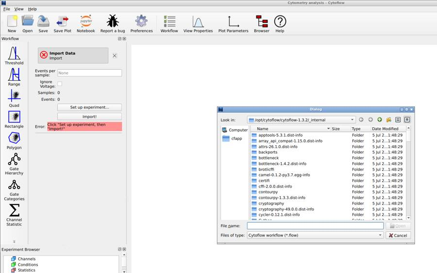
cu click 1038 744; cu paste "/task/inputs/start.flow"; cu key Return; sleep 2; cu screenshot /tmp/screen.png
{
"file_path": "/tmp/screen.png"
}/tmp/screen.png

cu click 746 449; sleep 8; cu screenshot /tmp/screen.png
{
"file_path": "/tmp/screen.png"
}/tmp/screen.png

cu click 230 183; sleep 2; cu screenshot /tmp/screen.png
{
"file_path": "/tmp/screen.png"
}/tmp/screen.png

cu drag 210 809 210 450; sleep 1; cu screenshot /tmp/screen.png
{
"file_path": "/tmp/screen.png"
}/tmp/screen.png
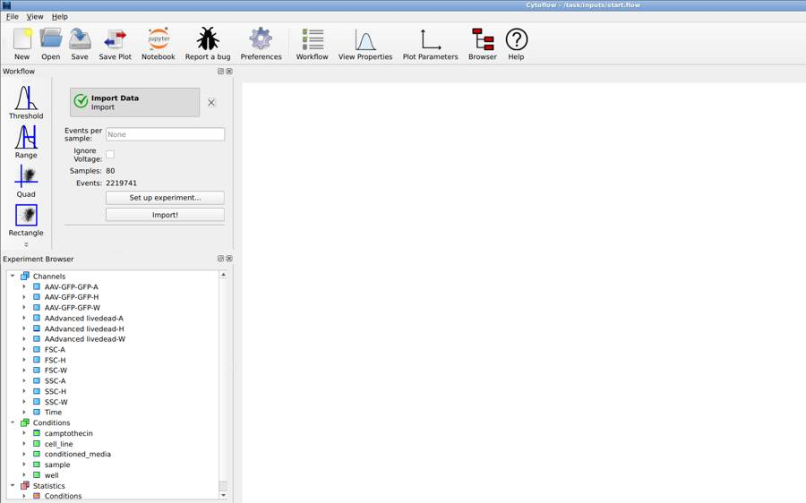
cu click 43 513; sleep 1; cu screenshot /tmp/screen.png
{
"file_path": "/tmp/screen.png"
}/tmp/screen.png
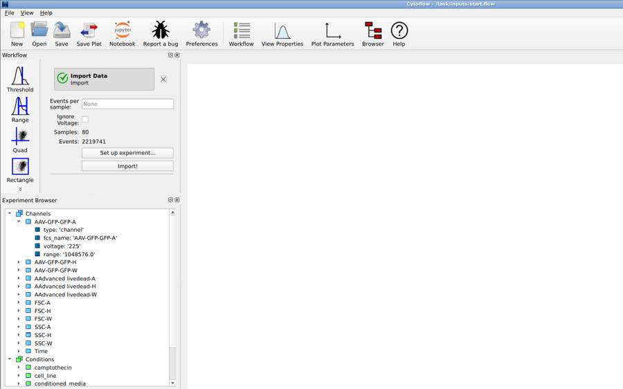
cu click 43 513; sleep 0.5; cu click 43 569; sleep 0.5; cu click 43 625; sleep 0.5; cu screenshot /tmp/screen.png
{
"file_path": "/tmp/screen.png"
}/tmp/screen.png
cu click 652 75; sleep 1.5; cu screenshot /tmp/screen.png
{
"file_path": "/tmp/screen.png"
}/tmp/screen.png

cu click 652 75; sleep 1.5; cu screenshot /tmp/screen.png
{
"file_path": "/tmp/screen.png"
}/tmp/screen.png
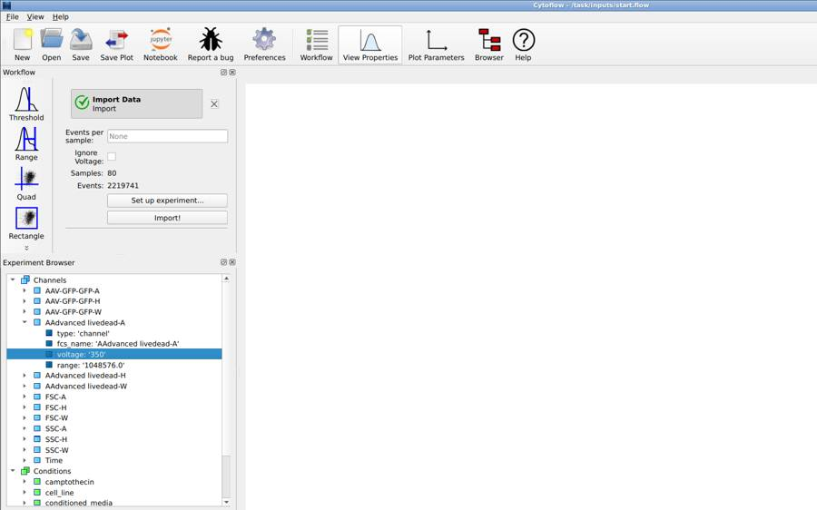
cu click 700 9 double; sleep 2; cu screenshot /tmp/screen.png
{
"file_path": "/tmp/screen.png"
}/tmp/screen.png
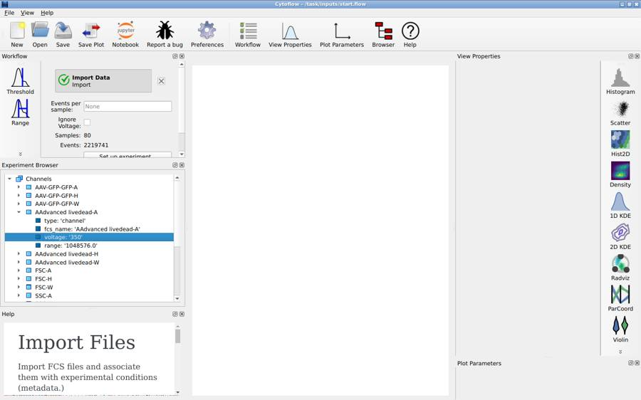
cu click 408 706; sleep 0.5; cu click 408 371; sleep 0.5; cu click 1393 385; sleep 2; cu screenshot /tmp/screen.png
{
"file_path": "/tmp/screen.png"
}/tmp/screen.png
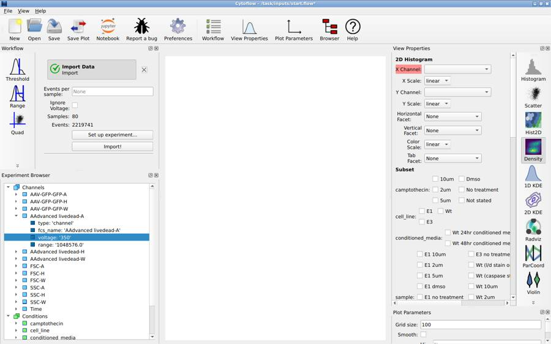
cu click 1195 181; sleep 1; cu screenshot /tmp/screen.png
{
"file_path": "/tmp/screen.png"
}/tmp/screen.png
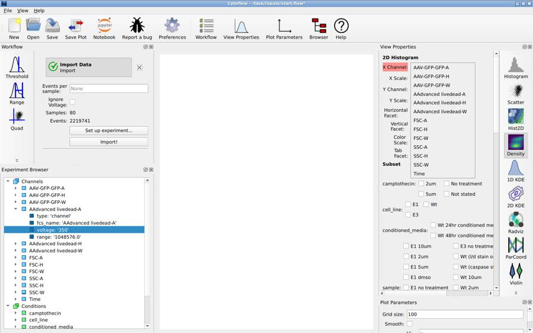
cu click 1135 325; sleep 1; cu click 1195 241; sleep 1; cu screenshot /tmp/screen.png
{
"file_path": "/tmp/screen.png"
}/tmp/screen.png
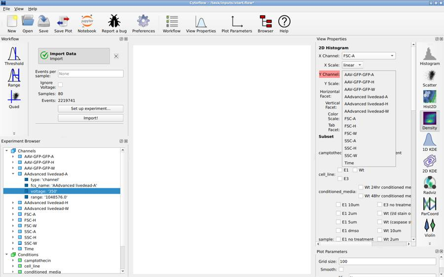
cu click 1135 457; sleep 6; cu screenshot /tmp/screen.png
{
"file_path": "/tmp/screen.png"
}/tmp/screen.png
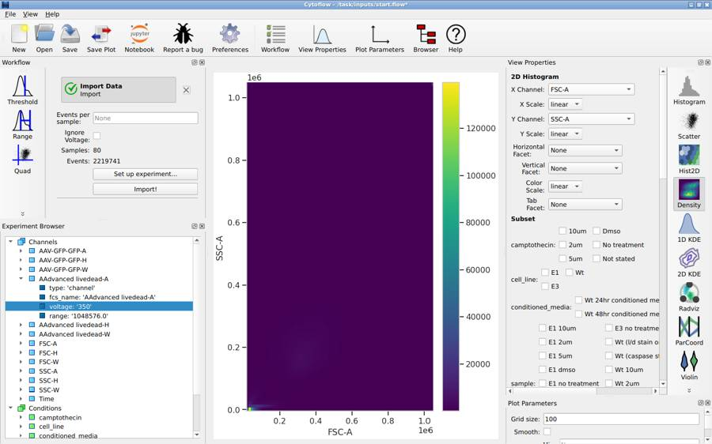
cu click 1142 211; sleep 1; cu screenshot /tmp/screen.png
{
"file_path": "/tmp/screen.png"
}/tmp/screen.png
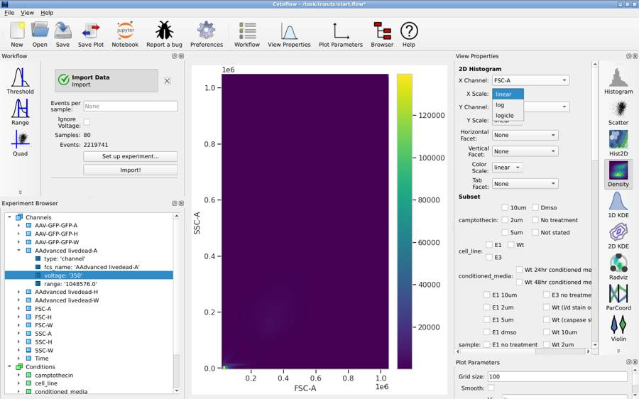
cu click 1127 236; sleep 3; cu click 1142 271; sleep 1; cu screenshot /tmp/screen.png
{
"file_path": "/tmp/screen.png"
}/tmp/screen.png
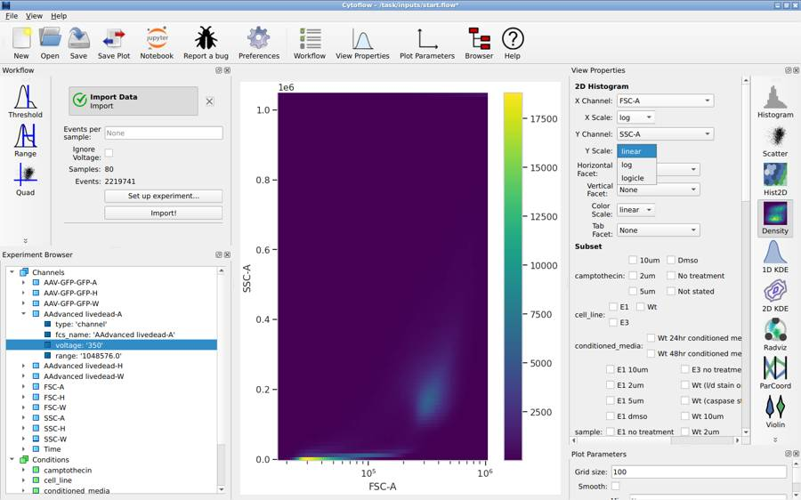
cu click 1127 296; sleep 3; cu click 1142 377; sleep 1; cu screenshot /tmp/screen.png
{
"file_path": "/tmp/screen.png"
}/tmp/screen.png
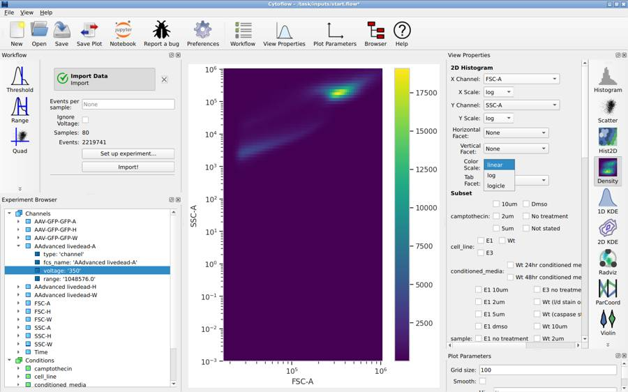
cu click 1127 402; sleep 4; cu screenshot /tmp/screen.png
{
"file_path": "/tmp/screen.png"
}/tmp/screen.png
cu click 1142 271; sleep 1; cu click 1137 320; sleep 3; cu click 1142 211; sleep 1; cu click 1137 260; sleep 4; cu screenshot /tmp/screen.png
{
"file_path": "/tmp/screen.png"
}/tmp/screen.png
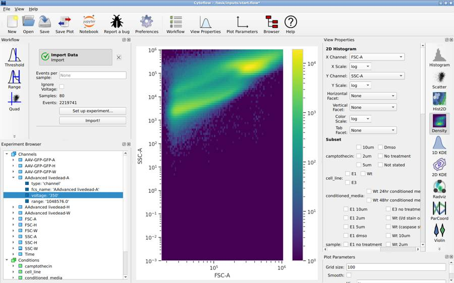
cu click 1142 271; sleep 1.5; cu screenshot /tmp/screen.png
{
"file_path": "/tmp/screen.png"
}/tmp/screen.png
cu click 1137 296; sleep 4; cu click 1142 211; sleep 1.5; cu screenshot /tmp/screen.png
{
"file_path": "/tmp/screen.png"
}/tmp/screen.png
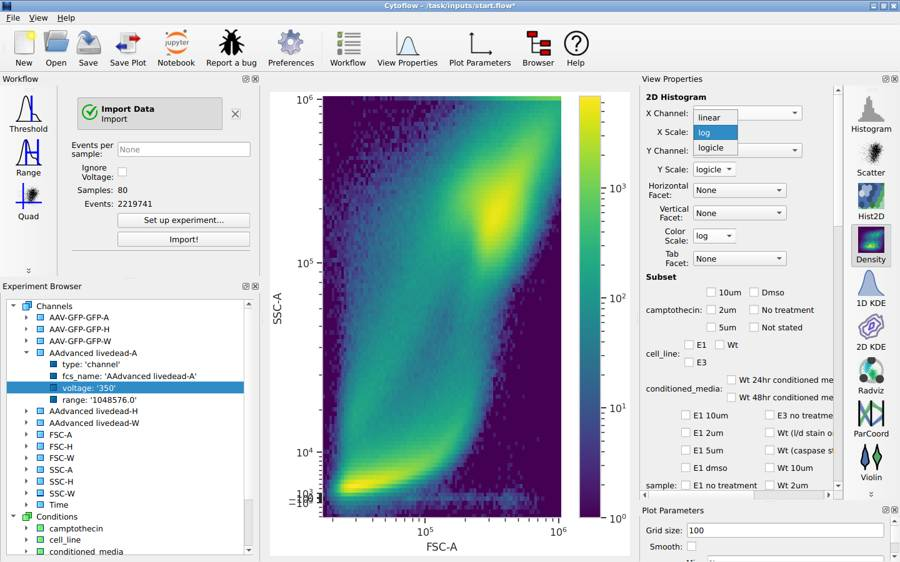
cu click 1137 236; sleep 5; cu screenshot /tmp/screen.png
{
"file_path": "/tmp/screen.png"
}/tmp/screen.png
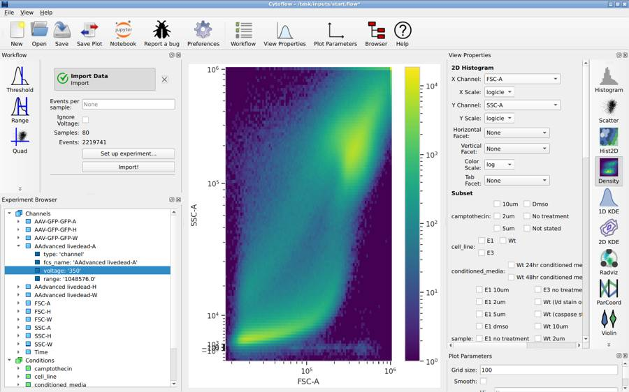
cu click 1393 180; sleep 2; cu screenshot /tmp/screen.png
{
"file_path": "/tmp/screen.png"
}/tmp/screen.png
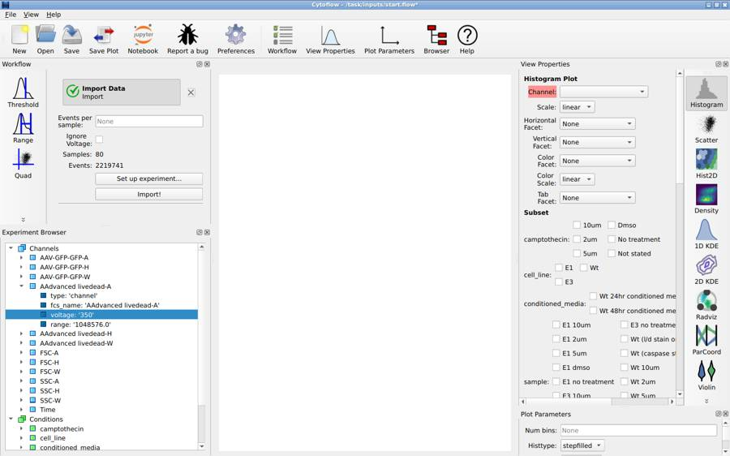
cu click 1190 181; sleep 1.5; cu screenshot /tmp/screen.png
{
"file_path": "/tmp/screen.png"
}/tmp/screen.png
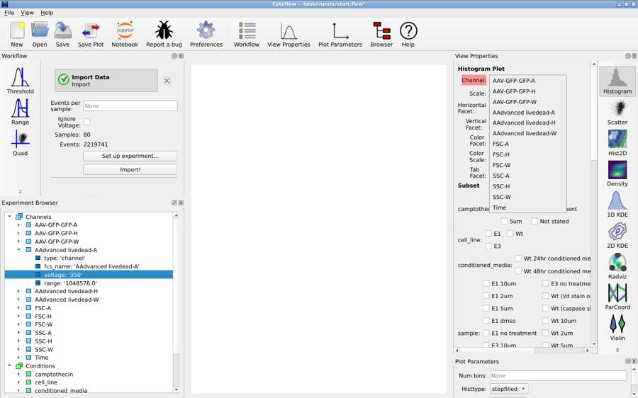
cu click 1128 469; sleep 4; cu click 1177 244; sleep 1.5; cu screenshot /tmp/screen.png
{
"file_path": "/tmp/screen.png"
}/tmp/screen.png
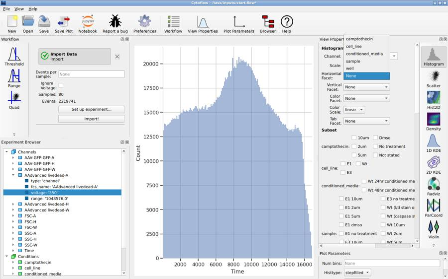
cu click 1125 220; sleep 10; cu screenshot /tmp/screen.png
{
"file_path": "/tmp/screen.png"
}/tmp/screen.png
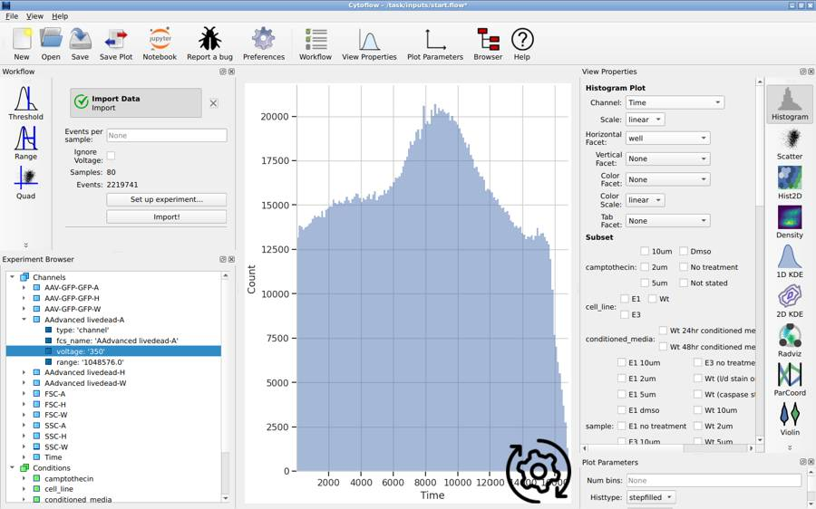
sleep 20; cu screenshot /tmp/screen.png
{
"file_path": "/tmp/screen.png"
}/tmp/screen.png
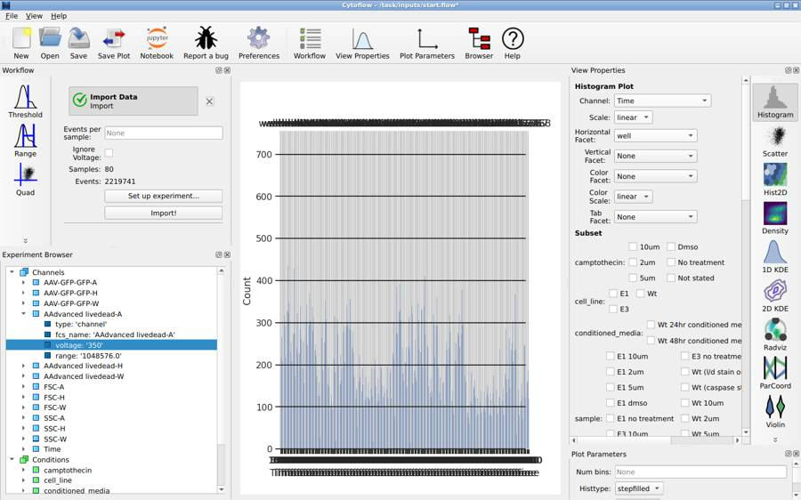
cu click 204 75; sleep 2; cu screenshot /tmp/screen.png
{
"file_path": "/tmp/screen.png"
}/tmp/screen.png
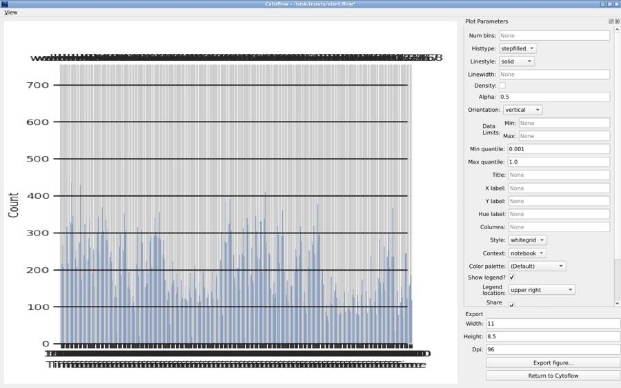
cu click 1295 526; cu key ctrl+a; cu type "12"; cu key Return; sleep 1; cu click 1282 750; cu key ctrl+a; cu type "30"; cu key Return; cu click 1282 780; cu key ctrl+a; cu type "20"; cu key Return; cu click 1282 810; cu key ctrl+a; cu type "60"; cu key Return; sleep 25; cu screenshot /tmp/screen.png
{
"file_path": "/tmp/screen.png"
}/tmp/screen.png
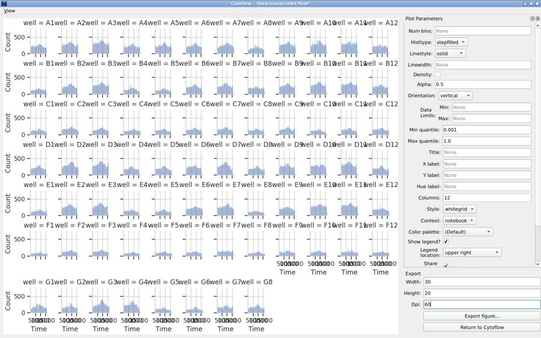
cu click 1282 841; sleep 2; cu screenshot /tmp/screen.png
{
"file_path": "/tmp/screen.png"
}/tmp/screen.png
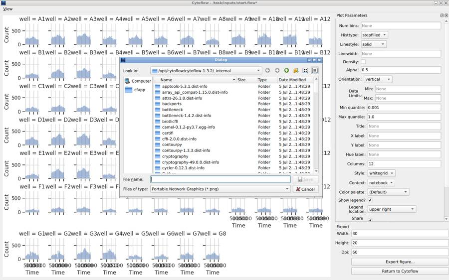
mkdir -p /tmp/plots; chmod 777 /tmp/plots; cu click 706 576; cu paste "/tmp/plots/time_hist.png"; cu key Return; sleep 20; ls -la /tmp/plots; cu screenshot /tmp/screen.png
total 92 drwxrwxrwx 2 root root 4096 Nov 6 00:38 . drwxrwxrwx 9 root root 4096 Nov 6 00:38 .. -rw-rw-r-- 1 cfapp cfapp 85912 Nov 6 00:38 time_hist.png /tmp/screen.png
{
"file_path": "/tmp/plots/time_hist.png"
}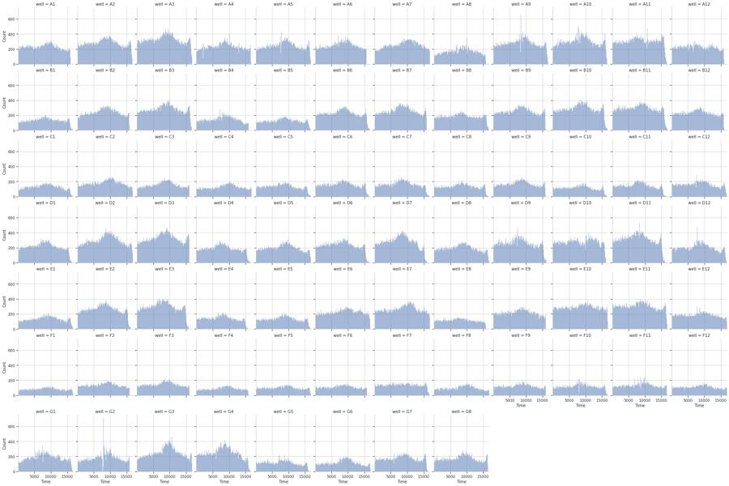
cd /tmp/plots; python3 -c "
from PIL import Image
im=Image.open('time_hist.png'); print(im.size)
w,h=im.size
im.crop((0,0,w//2,h//2)).resize((w,h)).save('c1.png')
im.crop((w//2,0,w,h//2)).resize((w,h)).save('c2.png')
im.crop((0,h//2,w//2,h)).resize((w,h)).save('c3.png')
im.crop((w//2,h//2,w,h)).resize((w,h)).save('c4.png')
"{
"file_path": "/tmp/plots/c1.png"
}(1806, 1206) Shell cwd was reset to /task
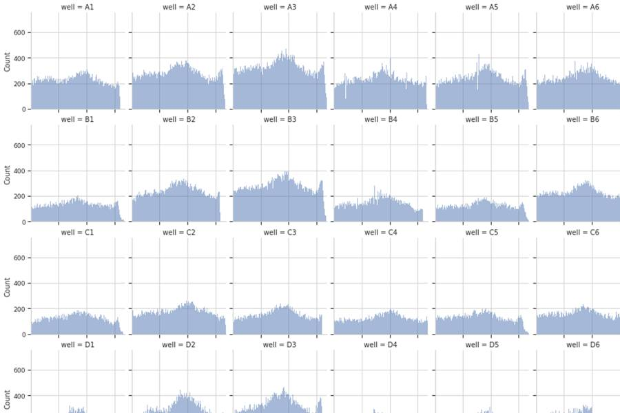
{
"file_path": "/tmp/plots/c4.png"
}
{
"file_path": "/tmp/plots/c3.png"
}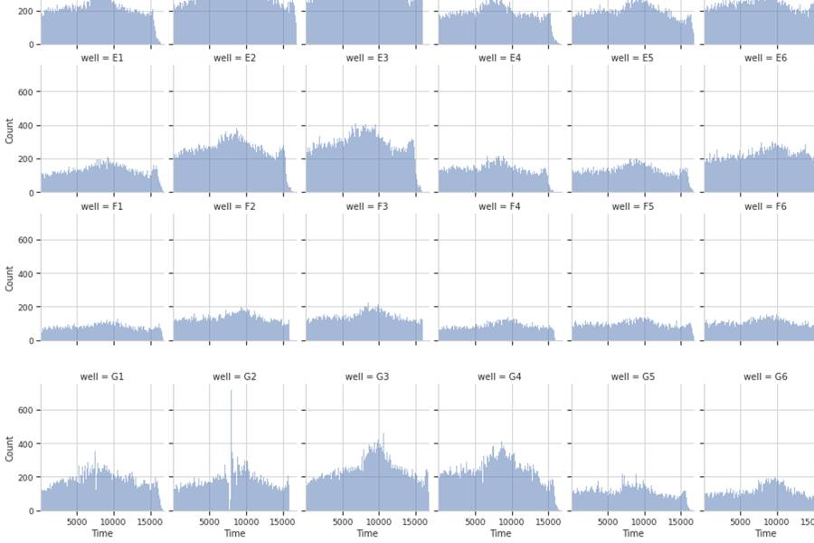
cu click 1282 871; sleep 3; cu click 1393 385; sleep 3; cu screenshot /tmp/screen.png
{
"file_path": "/tmp/screen.png"
}/tmp/screen.png
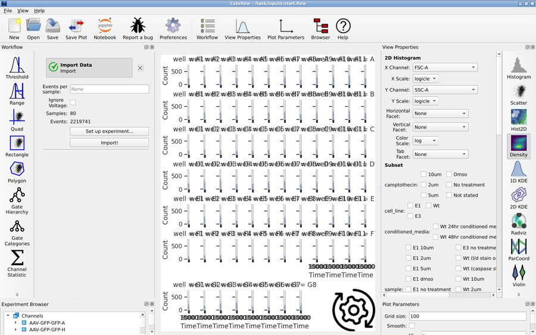
sleep 5; cu click 1182 304; sleep 1.5; cu screenshot /tmp/screen.png
{
"file_path": "/tmp/screen.png"
}/tmp/screen.png
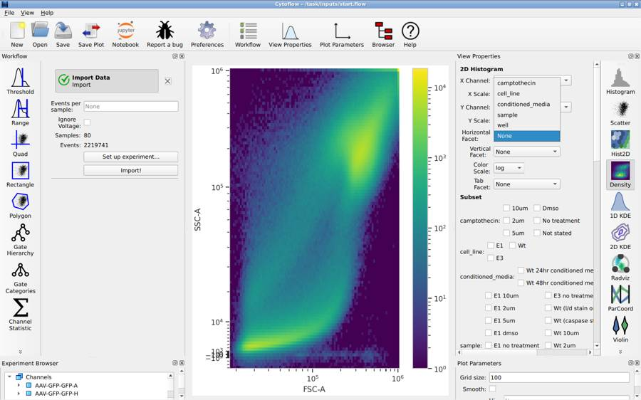
cu click 1130 281; sleep 3; cu click 204 75; sleep 3; cu screenshot /tmp/screen.png
{
"file_path": "/tmp/screen.png"
}/tmp/screen.png
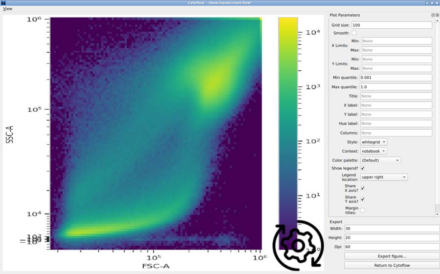
cu click 1295 436; cu key ctrl+a; cu type "12"; cu key Return; sleep 45; cu screenshot /tmp/screen.png
{
"file_path": "/tmp/screen.png"
}/tmp/screen.png

sleep 40; cu screenshot /tmp/screen.png
<tool_use_error>Blocked: sleep 40 followed by: cu screenshot /tmp/screen.png. To wait for a condition, use Monitor with an until-loop (e.g. `until <check>; do sleep 2; done`). To wait for a command you started, use run_in_background: true. Do not chain shorter sleeps to work around this block.</tool_use_error>
{
"file_path": "/tmp/screen.png"
}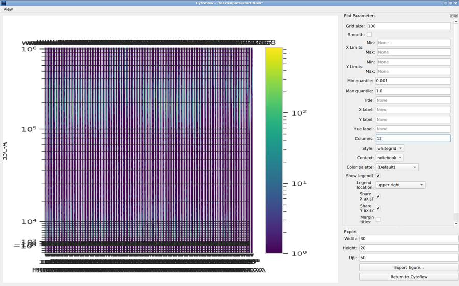
cu screenshot /tmp/screen.png
/tmp/screen.png
{
"file_path": "/tmp/screen.png"
}
cu click 1295 315; sleep 2; cu click 1282 841; sleep 2; cu screenshot /tmp/screen.png
{
"file_path": "/tmp/screen.png"
}/tmp/screen.png
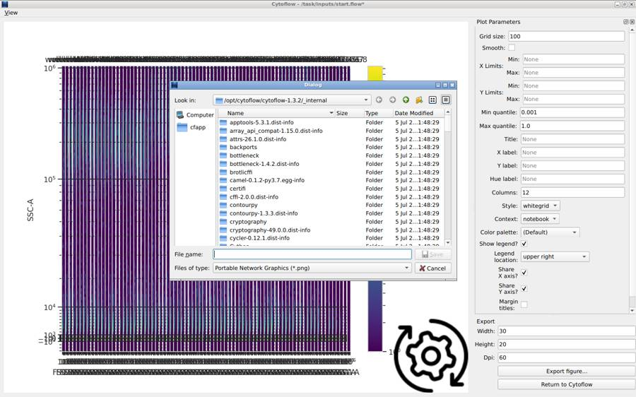
cu click 706 576; cu paste "/tmp/plots/fsc_ssc.png"; cu key Return; timeout 300 bash -c 'until [ -f /tmp/plots/fsc_ssc.png ]; do sleep 3; done'; ls -la /tmp/plots
total 736 drwxrwxrwx 2 root root 4096 Nov 6 00:39 . drwxrwxrwx 9 root root 4096 Nov 6 00:41 .. -rw-r--r-- 1 root root 174877 Nov 6 00:39 c1.png -rw-r--r-- 1 root root 155907 Nov 6 00:39 c2.png -rw-r--r-- 1 root root 177346 Nov 6 00:39 c3.png -rw-r--r-- 1 root root 139719 Nov 6 00:39 c4.png -rw-rw-r-- 1 cfapp cfapp 85912 Nov 6 00:38 time_hist.png
date; ls -la /tmp/plots; cu screenshot /tmp/screen.png
Fri Nov 6 00:46:43 UTC 2026 total 736 drwxrwxrwx 2 root root 4096 Nov 6 00:39 . drwxrwxrwx 9 root root 4096 Nov 6 00:46 .. -rw-r--r-- 1 root root 174877 Nov 6 00:39 c1.png -rw-r--r-- 1 root root 155907 Nov 6 00:39 c2.png -rw-r--r-- 1 root root 177346 Nov 6 00:39 c3.png -rw-r--r-- 1 root root 139719 Nov 6 00:39 c4.png -rw-rw-r-- 1 cfapp cfapp 85912 Nov 6 00:38 time_hist.png /tmp/screen.png
{
"file_path": "/tmp/screen.png"
}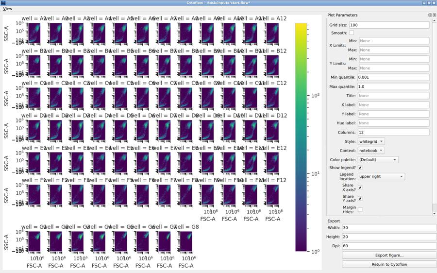
cu click 1282 841; sleep 3; cu screenshot /tmp/screen.png
{
"file_path": "/tmp/screen.png"
}/tmp/screen.png
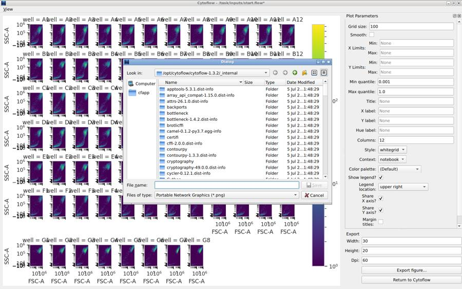
cu click 706 576; cu paste "/tmp/plots/fsc_ssc.png"; sleep 0.5; cu click 980 576; timeout 300 bash -c 'until [ -f /tmp/plots/fsc_ssc.png ]; do sleep 3; done'; sleep 3; ls -la /tmp/plots
total 1288 drwxrwxrwx 2 root root 4096 Nov 6 00:47 . drwxrwxrwx 9 root root 4096 Nov 6 00:46 .. -rw-r--r-- 1 root root 174877 Nov 6 00:39 c1.png -rw-r--r-- 1 root root 155907 Nov 6 00:39 c2.png -rw-r--r-- 1 root root 177346 Nov 6 00:39 c3.png -rw-r--r-- 1 root root 139719 Nov 6 00:39 c4.png -rw-rw-r-- 1 cfapp cfapp 564126 Nov 6 00:47 fsc_ssc.png -rw-rw-r-- 1 cfapp cfapp 85912 Nov 6 00:38 time_hist.png
cd /tmp/plots; python3 -c "
from PIL import Image
im=Image.open('fsc_ssc.png'); print(im.size)
w,h=im.size
im.crop((0,0,w//2,h//2+40)).save('f1.png')
im.crop((w//2,0,w,h//2+40)).save('f2.png')
im.crop((0,h//2,w//2,h)).save('f3.png')
im.crop((w//2,h//2,w,h)).save('f4.png')
"(1802, 1206) Shell cwd was reset to /task
{
"file_path": "/tmp/plots/f1.png"
}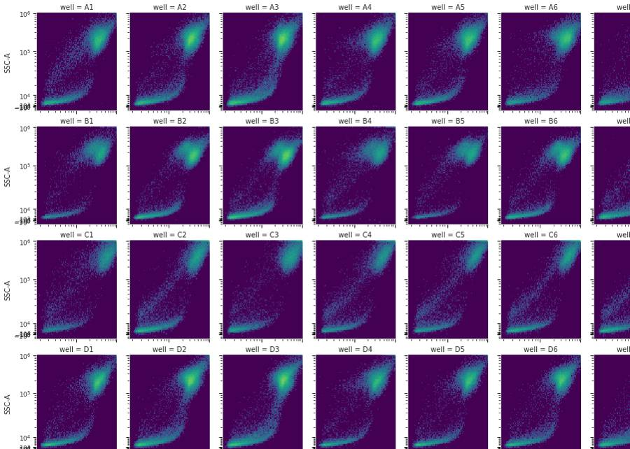
{
"file_path": "/tmp/plots/f2.png"
}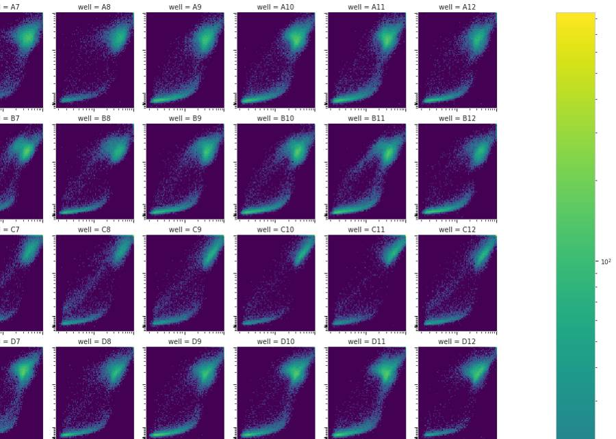
{
"file_path": "/tmp/plots/f3.png"
}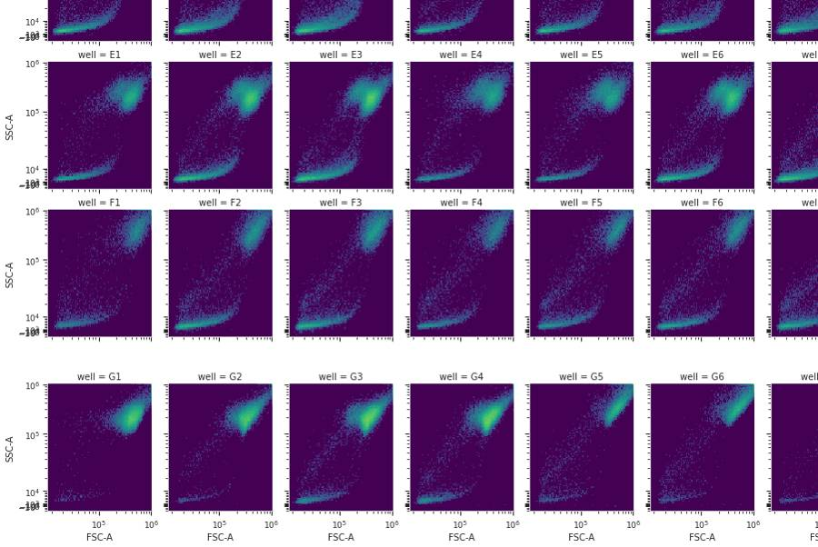
{
"file_path": "/tmp/plots/f4.png"
}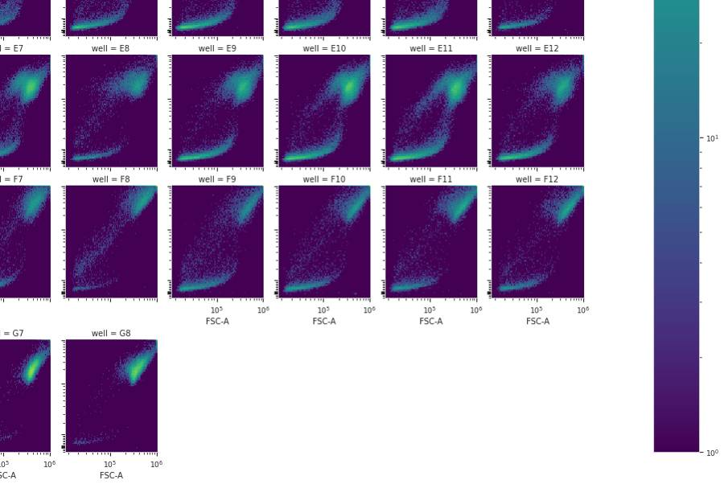
cu click 1282 871; sleep 3; cu screenshot /tmp/screen.png
{
"file_path": "/tmp/screen.png"
}/tmp/screen.png
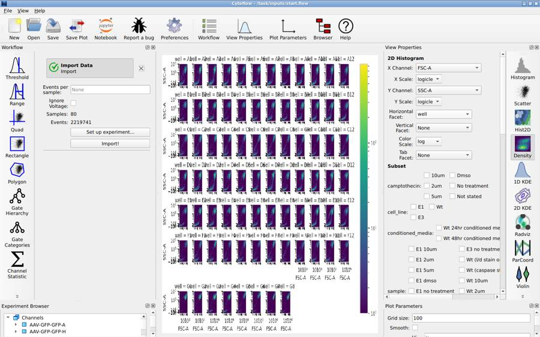
cu click 1195 181; sleep 1.5; cu screenshot /tmp/screen.png
{
"file_path": "/tmp/screen.png"
}/tmp/screen.png
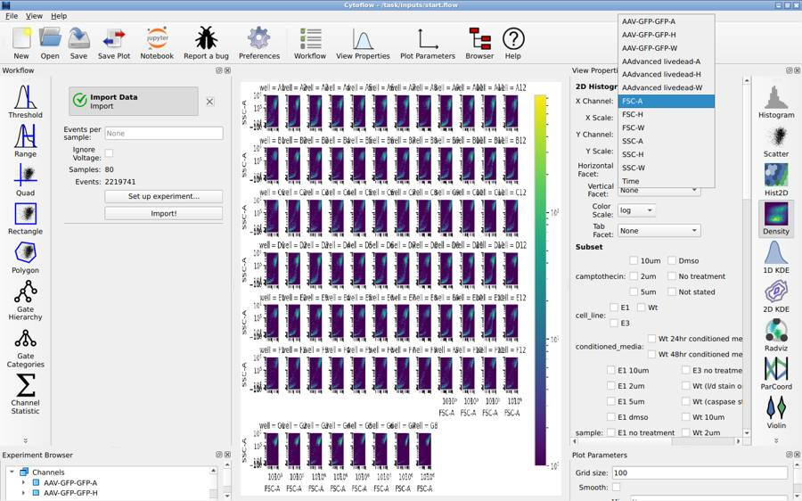
cu click 1165 38; sleep 2; cu click 1195 241; sleep 1.5; cu screenshot /tmp/screen.png
{
"file_path": "/tmp/screen.png"
}/tmp/screen.png
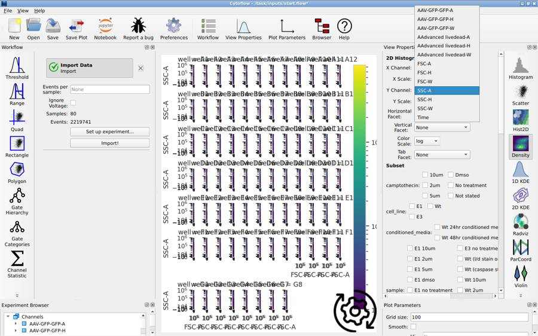
cu click 1187 99; sleep 2; cu screenshot /tmp/screen.png
{
"file_path": "/tmp/screen.png"
}/tmp/screen.png
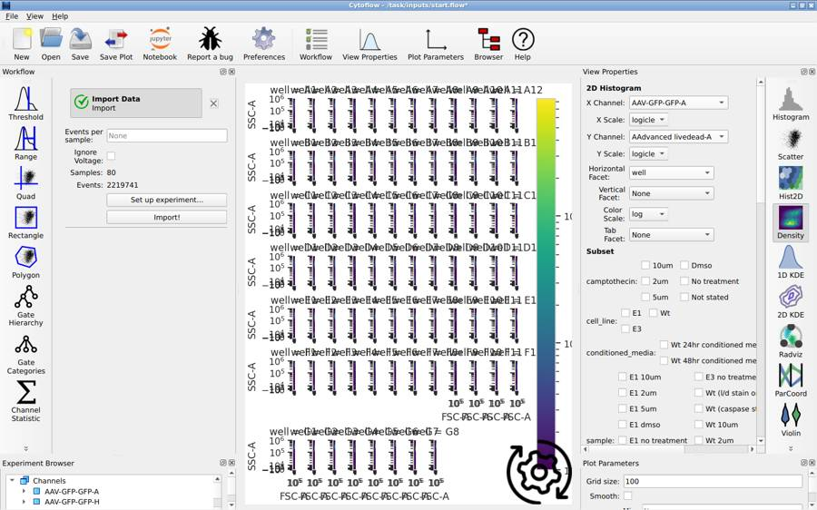
cu click 204 75; timeout 200 bash -c 'while true; do cu screenshot /tmp/screen.png >/dev/null; python3 -c " from PIL import Image im=Image.open(\"/tmp/screen.png\").convert(\"RGB\") # spinner region: check dark pixels around (970,800) px=[im.getpixel((x,y)) for x in range(900,1050,5) for y in range(740,880,5)] dark=sum(1 for p in px if sum(p)<150) import sys; sys.exit(0 if dark<20 else 1) " && break; sleep 4; done'; echo done
{
"file_path": "/tmp/screen.png"
}done
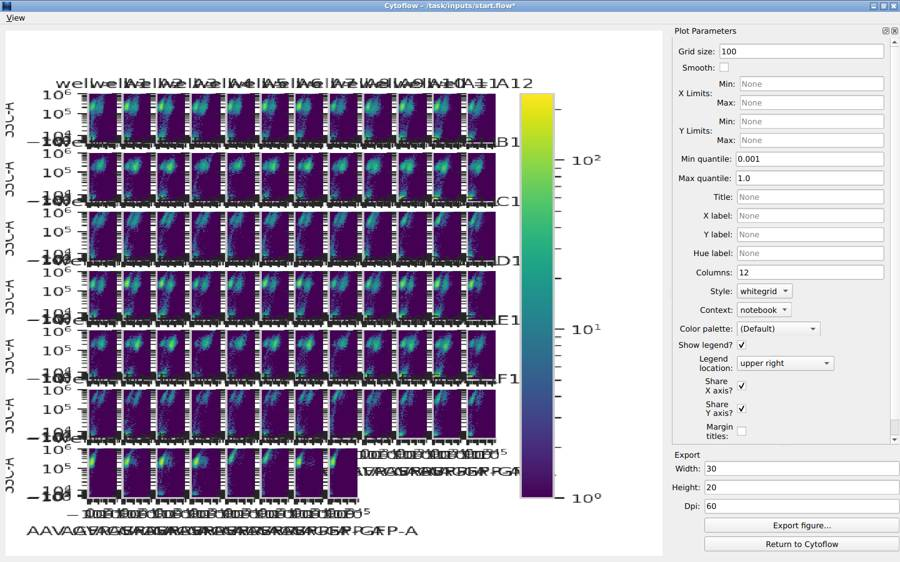
cu click 1282 841; sleep 3; cu click 706 576; cu paste "/tmp/plots/casp_ld.png"; sleep 0.5; cu click 980 576; timeout 300 bash -c 'until [ -f /tmp/plots/casp_ld.png ]; do sleep 3; done'; sleep 3; ls -la /tmp/plots/casp_ld.png
Exit code 2 ls: cannot access '/tmp/plots/casp_ld.png': No such file or directory
cu screenshot /tmp/screen.png
/tmp/screen.png
{
"file_path": "/tmp/screen.png"
}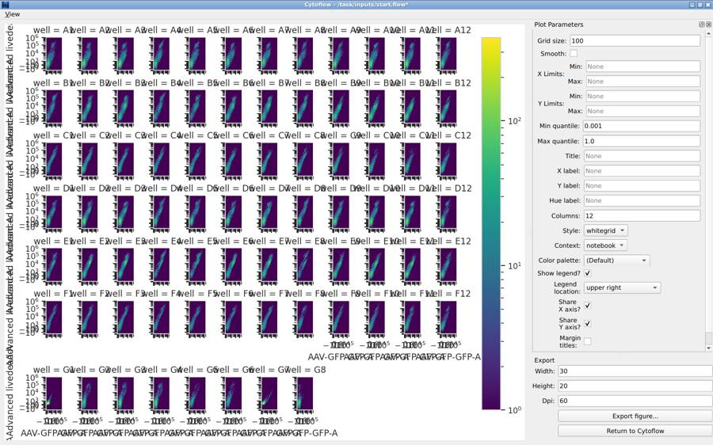
cu click 1282 841; sleep 3; cu screenshot /tmp/screen.png
{
"file_path": "/tmp/screen.png"
}/tmp/screen.png
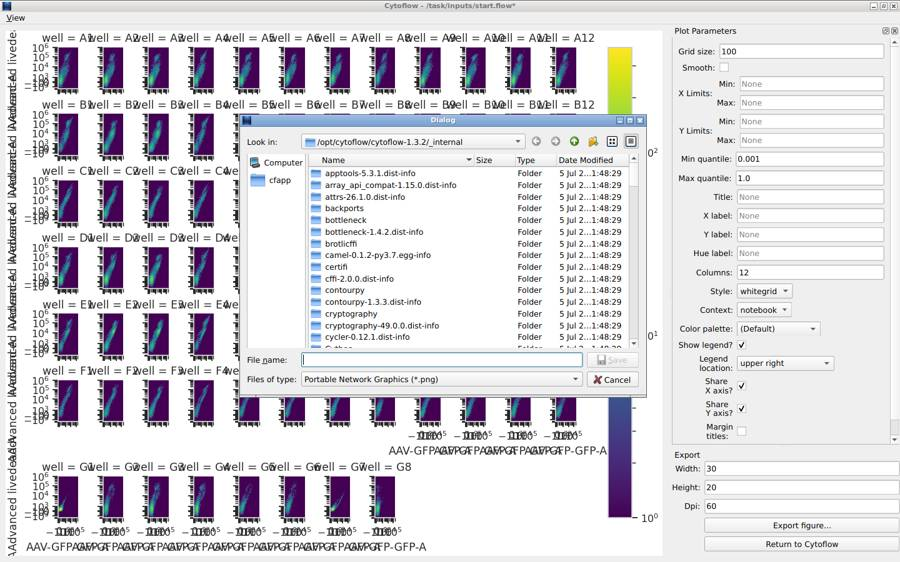
cu click 706 576; cu paste "/tmp/plots/casp_ld.png"; sleep 0.5; cu click 980 576; timeout 300 bash -c 'until [ -f /tmp/plots/casp_ld.png ]; do sleep 3; done'; sleep 3; ls -la /tmp/plots/casp_ld.png; cd /tmp/plots; python3 -c "
from PIL import Image
im=Image.open('casp_ld.png'); print(im.size)
w,h=im.size
im.crop((0,0,w//2,h//2+40)).save('g1.png')
im.crop((w//2,0,w,h//2+40)).save('g2.png')
im.crop((0,h//2,w//2,h)).save('g3.png')
im.crop((w//2,h//2,w,h)).save('g4.png')
"{
"file_path": "/tmp/plots/g1.png"
}-rw-rw-r-- 1 cfapp cfapp 563548 Nov 6 00:55 /tmp/plots/casp_ld.png (1802, 1206) Shell cwd was reset to /task
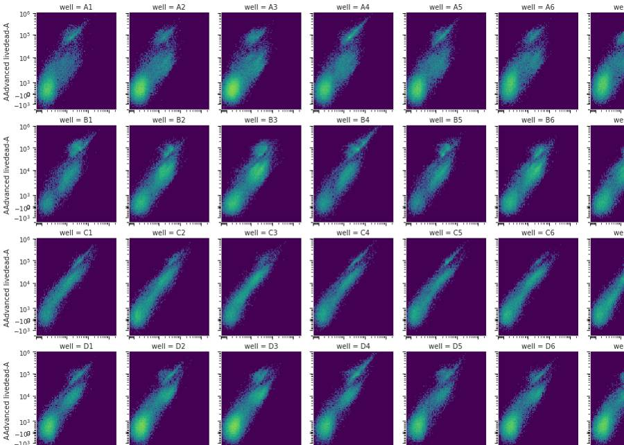
{
"file_path": "/tmp/plots/g3.png"
}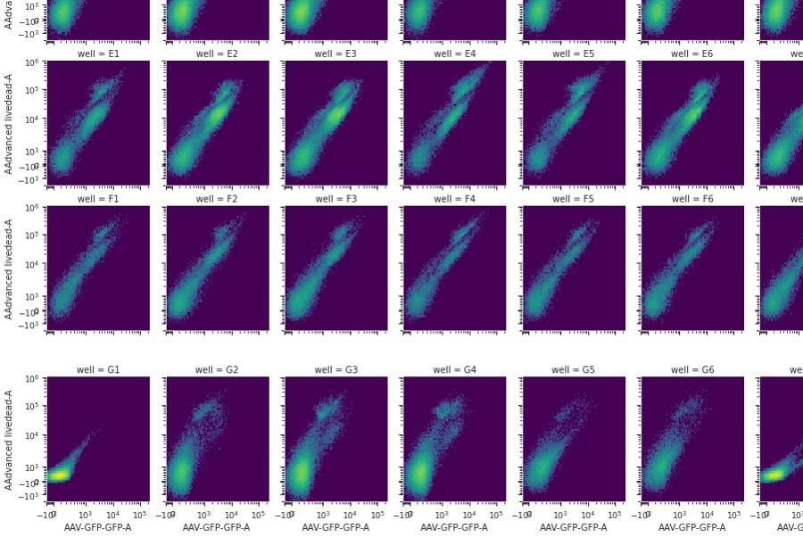
{
"file_path": "/tmp/plots/g4.png"
}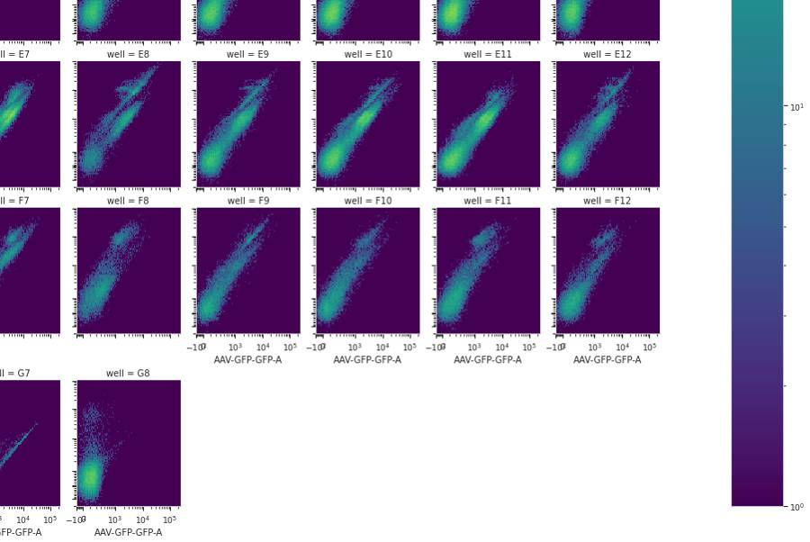
thinking
Controls check out (G7 and G8 match their labels), and there's heavy green-to-BL2 spillover. I'm building a live-cell polygon gate on FSC-A/SSC-A next.
cu click 1282 871; sleep 3; cu click 45 460; sleep 3; cu screenshot /tmp/screen.png
{
"file_path": "/tmp/screen.png"
}/tmp/screen.png
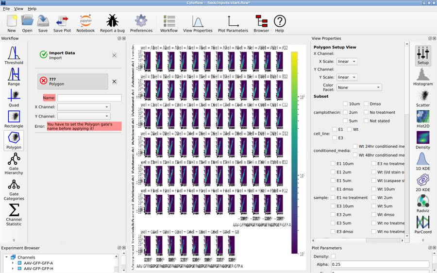
cu click 294 322; cu type "cells"; cu key Tab; sleep 1; cu click 276 352; sleep 1.5; cu screenshot /tmp/screen.png
{
"file_path": "/tmp/screen.png"
}/tmp/screen.png
cu click 216 496; sleep 1; cu click 276 383; sleep 1.5; cu screenshot /tmp/screen.png
{
"file_path": "/tmp/screen.png"
}/tmp/screen.png
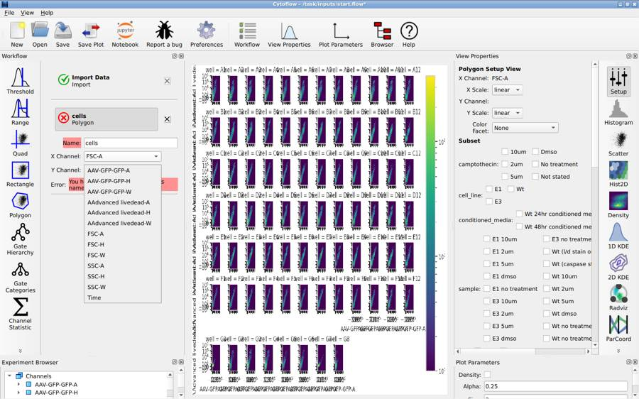
cu click 216 599; sleep 2; cu click 1142 202; sleep 1.5; cu screenshot /tmp/screen.png
{
"file_path": "/tmp/screen.png"
}/tmp/screen.png
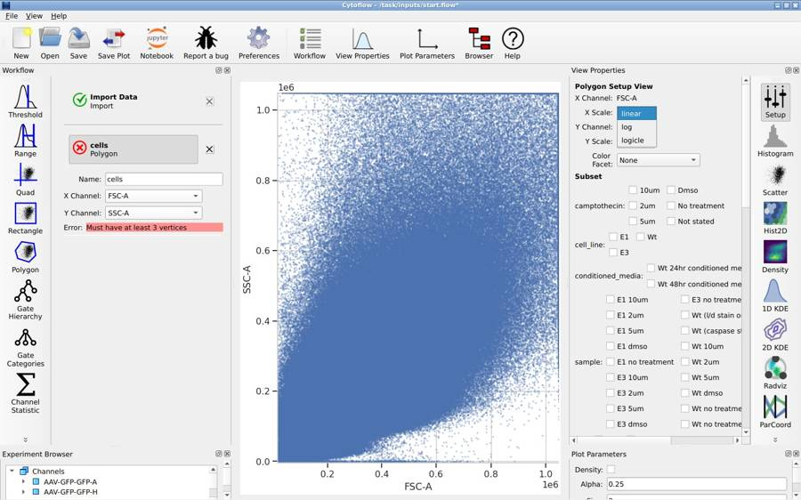
cu click 1137 252; sleep 3; cu click 1142 254; sleep 1.5; cu screenshot /tmp/screen.png
{
"file_path": "/tmp/screen.png"
}/tmp/screen.png
cu click 1137 304; sleep 2; cu click 1098 845; timeout 200 bash -c 'while true; do cu screenshot /tmp/screen.png >/dev/null; python3 -c " from PIL import Image im=Image.open(\"/tmp/screen.png\").convert(\"RGB\") px=[im.getpixel((x,y)) for x in range(900,1000,4) for y in range(780,880,4)] dark=sum(1 for p in px if sum(p)<120) import sys; sys.exit(0 if dark<15 else 1) " && break; sleep 4; done'; cu screenshot /tmp/screen.png
{
"file_path": "/tmp/screen.png"
}/tmp/screen.png
cu click 1142 288; sleep 1.5; cu screenshot /tmp/screen.png
{
"file_path": "/tmp/screen.png"
}/tmp/screen.png
cu click 1127 313; sleep 5; cu screenshot /tmp/screen.png
{
"file_path": "/tmp/screen.png"
}/tmp/screen.png
cu scroll 1230 870 down 5; sleep 1; cu screenshot /tmp/screen.png
{
"file_path": "/tmp/screen.png"
}/tmp/screen.png
cu drag 1230 805 1230 430; sleep 1; cu scroll 1230 700 up 10; sleep 1; cu screenshot /tmp/screen.png
{
"file_path": "/tmp/screen.png"
}/tmp/screen.png
cu click 1270 578; cu key ctrl+a; cu type "1600000"; cu key Tab; sleep 1; cu click 1270 639; cu key ctrl+a; cu type "1600000"; cu key Tab; sleep 1; cu click 1255 496; cu key ctrl+a; cu type "100"; cu key Tab; timeout 200 bash -c 'while true; do cu screenshot /tmp/screen.png >/dev/null; python3 -c " from PIL import Image im=Image.open(\"/tmp/screen.png\").convert(\"RGB\") px=[im.getpixel((x,y)) for x in range(900,1000,4) for y in range(780,880,4)] dark=sum(1 for p in px if sum(p)<120) import sys; sys.exit(0 if dark<15 else 1) " && break; sleep 4; done'; cu screenshot /tmp/screen.png
{
"file_path": "/tmp/screen.png"
}/tmp/screen.png
cu click 650 712; sleep 0.7; cu click 585 610; sleep 0.7; cu click 585 165; sleep 0.7; cu click 887 165; sleep 0.7; cu click 887 712 double; sleep 3; cu screenshot /tmp/screen.png
{
"file_path": "/tmp/screen.png"
}/tmp/screen.png
cu click 650 712; sleep 4; cu screenshot /tmp/screen.png
{
"file_path": "/tmp/screen.png"
}/tmp/screen.png
timeout 200 bash -c 'while true; do cu screenshot /tmp/screen.png >/dev/null; python3 -c " from PIL import Image im=Image.open(\"/tmp/screen.png\").convert(\"RGB\") px=[im.getpixel((x,y)) for x in range(900,1000,4) for y in range(780,880,4)] dark=sum(1 for p in px if sum(p)<120) import sys; sys.exit(0 if dark<15 else 1) " && break; sleep 4; done'; cu click 45 460; sleep 3; cu screenshot /tmp/screen.png
{
"file_path": "/tmp/screen.png"
}/tmp/screen.png
cu click 294 409; cu type "singlets"; cu key Tab; sleep 1; cu click 1098 470; sleep 1; cu scroll 1180 380 down 15; sleep 1; cu screenshot /tmp/screen.png
{
"file_path": "/tmp/screen.png"
}/tmp/screen.png
cu scroll 1180 300 up 30; sleep 0.5; cu scroll 1180 300 down 3; sleep 1; cu screenshot /tmp/screen.png
{
"file_path": "/tmp/screen.png"
}/tmp/screen.png
cu click 1086 292; sleep 1; cu click 276 439; sleep 1.5; cu screenshot /tmp/screen.png
{
"file_path": "/tmp/screen.png"
}/tmp/screen.png
cu click 216 583; sleep 1; cu click 276 469; sleep 1.5; cu screenshot /tmp/screen.png
{
"file_path": "/tmp/screen.png"
}/tmp/screen.png
cu click 216 637; sleep 1; cu click 1255 496; cu key ctrl+a; cu type "100"; cu key Tab; timeout 200 bash -c 'while true; do cu screenshot /tmp/screen.png >/dev/null; python3 -c " from PIL import Image im=Image.open(\"/tmp/screen.png\").convert(\"RGB\") px=[im.getpixel((x,y)) for x in range(900,1000,4) for y in range(780,880,4)] dark=sum(1 for p in px if sum(p)<120) import sys; sys.exit(0 if dark<15 else 1) " && break; sleep 4; done'; cu screenshot /tmp/screen.png
{
"file_path": "/tmp/screen.png"
}/tmp/screen.png
cu scroll 1180 300 up 20; sleep 1; cu screenshot /tmp/screen.png
{
"file_path": "/tmp/screen.png"
}/tmp/screen.png
cu click 1142 288; sleep 1.5; cu click 1127 313; timeout 200 bash -c 'while true; do cu screenshot /tmp/screen.png >/dev/null; python3 -c " from PIL import Image im=Image.open(\"/tmp/screen.png\").convert(\"RGB\") px=[im.getpixel((x,y)) for x in range(900,1000,4) for y in range(780,880,4)] dark=sum(1 for p in px if sum(p)<120) import sys; sys.exit(0 if dark<15 else 1) " && break; sleep 4; done'; cu screenshot /tmp/screen.png
{
"file_path": "/tmp/screen.png"
}/tmp/screen.png
cu click 532 852; sleep 0.7; cu click 532 770; sleep 0.7; cu click 760 300; sleep 0.7; cu click 885 300; sleep 0.7; cu click 885 526; sleep 0.7; cu click 709 687; sleep 0.7; cu click 600 790; sleep 0.7; cu click 532 852; sleep 3; cu screenshot /tmp/screen.png
{
"file_path": "/tmp/screen.png"
}/tmp/screen.png
cu click 539 828; sleep 0.7; cu click 539 760; sleep 0.7; cu click 760 300; sleep 3; cu screenshot /tmp/screen.png
{
"file_path": "/tmp/screen.png"
}/tmp/screen.png
timeout 200 bash -c 'while true; do cu screenshot /tmp/screen.png >/dev/null; python3 -c " from PIL import Image im=Image.open(\"/tmp/screen.png\").convert(\"RGB\") px=[im.getpixel((x,y)) for x in range(900,1000,4) for y in range(780,880,4)] dark=sum(1 for p in px if sum(p)<120) import sys; sys.exit(0 if dark<15 else 1) " && break; sleep 4; done'; cu click 45 460; sleep 3; cu click 294 496; cu type "live"; cu key Tab; sleep 1; cu click 1098 470; sleep 1; cu scroll 1180 300 down 3; sleep 1; cu screenshot /tmp/screen.png
{
"file_path": "/tmp/screen.png"
}/tmp/screen.png
cu click 1086 292; sleep 1; cu scroll 1180 300 down 25; sleep 1; cu screenshot /tmp/screen.png
{
"file_path": "/tmp/screen.png"
}/tmp/screen.png
cu scroll 1180 300 up 8; sleep 1; cu screenshot /tmp/screen.png
{
"file_path": "/tmp/screen.png"
}/tmp/screen.png
cu scroll 1180 300 up 4; sleep 1; cu screenshot /tmp/screen.png
{
"file_path": "/tmp/screen.png"
}/tmp/screen.png
cu scroll 1180 300 up 3; sleep 1; cu screenshot /tmp/screen.png
{
"file_path": "/tmp/screen.png"
}/tmp/screen.png
cu click 1106 177; sleep 1; cu click 276 525; sleep 1.5; cu click 245 526; sleep 1; cu screenshot /tmp/screen.png
{
"file_path": "/tmp/screen.png"
}/tmp/screen.png
cu click 276 555; sleep 1.5; cu screenshot /tmp/screen.png
{
"file_path": "/tmp/screen.png"
}/tmp/screen.png
cu click 267 628; sleep 2; cu scroll 1180 300 up 30; sleep 1; cu click 1255 496; cu key ctrl+a; cu type "100"; cu key Tab; sleep 2; cu screenshot /tmp/screen.png
{
"file_path": "/tmp/screen.png"
}/tmp/screen.png
cu click 1142 202; sleep 1.5; cu screenshot /tmp/screen.png
{
"file_path": "/tmp/screen.png"
}/tmp/screen.png
cu click 1137 252; sleep 3; cu click 1142 254; sleep 1.5; cu screenshot /tmp/screen.png
{
"file_path": "/tmp/screen.png"
}/tmp/screen.png
cu click 1137 304; sleep 3; cu click 1142 288; sleep 1.5; cu screenshot /tmp/screen.png
{
"file_path": "/tmp/screen.png"
}/tmp/screen.png
cu click 1127 313; timeout 200 bash -c 'while true; do cu screenshot /tmp/screen.png >/dev/null; python3 -c " from PIL import Image im=Image.open(\"/tmp/screen.png\").convert(\"RGB\") px=[im.getpixel((x,y)) for x in range(900,1000,4) for y in range(780,880,4)] dark=sum(1 for p in px if sum(p)<120) import sys; sys.exit(0 if dark<15 else 1) " && break; sleep 4; done'; cu screenshot /tmp/screen.png
{
"file_path": "/tmp/screen.png"
}/tmp/screen.png
thinking
Three populations show up: live caspase-negative, caspase+ with BL2 spillover, and SYTOX+ dead cells. Next I'll draw a diagonal `live` gate through the valley between the caspase+ and dead clusters.
for p in "520 822" "520 535" "600 520" "661 449" "765 373" "868 250" "903 225" "903 822"; do cu click $p; sleep 0.7; done; cu click 520 822; sleep 3; cu screenshot /tmp/screen.png
{
"file_path": "/tmp/screen.png"
}/tmp/screen.png
timeout 200 bash -c 'while true; do cu screenshot /tmp/screen.png >/dev/null; python3 -c " from PIL import Image im=Image.open(\"/tmp/screen.png\").convert(\"RGB\") px=[im.getpixel((x,y)) for x in range(900,1000,4) for y in range(780,880,4)] dark=sum(1 for p in px if sum(p)<120) import sys; sys.exit(0 if dark<15 else 1) " && break; sleep 4; done'; cu click 45 180; sleep 3; cu screenshot /tmp/screen.png
{
"file_path": "/tmp/screen.png"
}/tmp/screen.png
cu click 294 581; cu type "caspase_pos"; cu key Tab; sleep 1; cu click 274 612; sleep 1.5; cu screenshot /tmp/screen.png
{
"file_path": "/tmp/screen.png"
}/tmp/screen.png
cu click 243 600; sleep 2; cu click 1140 224; sleep 1.5; cu screenshot /tmp/screen.png
{
"file_path": "/tmp/screen.png"
}/tmp/screen.png
cu click 1135 273; sleep 2; cu click 1180 258; sleep 1.5; cu screenshot /tmp/screen.png
{
"file_path": "/tmp/screen.png"
}/tmp/screen.png
cu click 1158 67; sleep 1; cu scroll 1180 350 down 3; sleep 1; cu screenshot /tmp/screen.png
{
"file_path": "/tmp/screen.png"
}/tmp/screen.png
cu click 1080 340; timeout 200 bash -c 'while true; do cu screenshot /tmp/screen.png >/dev/null; python3 -c " from PIL import Image im=Image.open(\"/tmp/screen.png\").convert(\"RGB\") px=[im.getpixel((x,y)) for x in range(900,1000,4) for y in range(780,880,4)] dark=sum(1 for p in px if sum(p)<120) import sys; sys.exit(0 if dark<15 else 1) " && break; sleep 4; done'; cu screenshot /tmp/screen.png
{
"file_path": "/tmp/screen.png"
}/tmp/screen.png
cu click 1180 258; sleep 1; cu screenshot /tmp/screen.png
{
"file_path": "/tmp/screen.png"
}/tmp/screen.png
cu click 294 642; cu key ctrl+a; cu type "700"; cu key Tab; timeout 200 bash -c 'while true; do cu screenshot /tmp/screen.png >/dev/null; python3 -c " from PIL import Image im=Image.open(\"/tmp/screen.png\").convert(\"RGB\") px=[im.getpixel((x,y)) for x in range(900,1000,4) for y in range(780,880,4)] dark=sum(1 for p in px if sum(p)<120) import sys; sys.exit(0 if dark<15 else 1) " && break; sleep 4; done'; cu screenshot /tmp/screen.png
{
"file_path": "/tmp/screen.png"
}/tmp/screen.png
timeout 200 bash -c 'while true; do cu screenshot /tmp/screen.png >/dev/null; python3 -c " from PIL import Image im=Image.open(\"/tmp/screen.png\").convert(\"RGB\") px=[im.getpixel((x,y)) for x in range(900,1000,4) for y in range(780,880,4)] dark=sum(1 for p in px if sum(p)<120) import sys; sys.exit(0 if dark<15 else 1) " && break; sleep 4; done'; cu click 45 710; sleep 3; cu screenshot /tmp/screen.png
{
"file_path": "/tmp/screen.png"
}/tmp/screen.png
cu click 400 614; sleep 2; cu click 45 180; sleep 3; cu screenshot /tmp/screen.png
{
"file_path": "/tmp/screen.png"
}/tmp/screen.png
cu click 362 614; sleep 3; cu screenshot /tmp/screen.png
{
"file_path": "/tmp/screen.png"
}/tmp/screen.png
cu click 294 668; cu type "ssc_saturated"; cu key Tab; sleep 1; cu click 274 698; sleep 1.5; cu screenshot /tmp/screen.png
{
"file_path": "/tmp/screen.png"
}/tmp/screen.png
cu click 215 815; sleep 1; cu click 1086 470 ; timeout 200 bash -c 'while true; do cu screenshot /tmp/screen.png >/dev/null; python3 -c " from PIL import Image im=Image.open(\"/tmp/screen.png\").convert(\"RGB\") px=[im.getpixel((x,y)) for x in range(900,1000,4) for y in range(780,880,4)] dark=sum(1 for p in px if sum(p)<120) import sys; sys.exit(0 if dark<15 else 1) " && break; sleep 4; done'; cu screenshot /tmp/screen.png
{
"file_path": "/tmp/screen.png"
}/tmp/screen.png
cu click 294 728; cu key ctrl+a; cu type "1040000"; cu key Tab; timeout 200 bash -c 'while true; do cu screenshot /tmp/screen.png >/dev/null; python3 -c " from PIL import Image im=Image.open(\"/tmp/screen.png\").convert(\"RGB\") px=[im.getpixel((x,y)) for x in range(900,1000,4) for y in range(780,880,4)] dark=sum(1 for p in px if sum(p)<120) import sys; sys.exit(0 if dark<15 else 1) " && break; sleep 4; done'; cu click 45 180; sleep 3; cu screenshot /tmp/screen.png
{
"file_path": "/tmp/screen.png"
}/tmp/screen.png
cu click 915 544; sleep 1; cu click 362 700; sleep 2; cu screenshot /tmp/screen.png
{
"file_path": "/tmp/screen.png"
}/tmp/screen.png
cu click 22 28; sleep 1.5; cu screenshot /tmp/screen.png
{
"file_path": "/tmp/screen.png"
}/tmp/screen.png
cu click 65 100; sleep 2; cu screenshot /tmp/screen.png
{
"file_path": "/tmp/screen.png"
}/tmp/screen.png
ls -ld /task/outputs; cu click 706 576; cu paste "/task/outputs/workflow.flow"; sleep 0.5; cu click 980 576; sleep 4; ls -la /task/outputs; cu screenshot /tmp/screen.png
{
"file_path": "/tmp/screen.png"
}drwxrwsrwx 2 agent task 4096 Nov 5 22:01 /task/outputs total 148 drwxrwsrwx 2 agent task 4096 Nov 6 01:07 . drwxr-xr-x 4 root root 4096 Nov 5 22:01 .. -rw-rw-r-- 1 cfapp task 140516 Nov 6 01:07 workflow.flow /tmp/screen.png
cd /task/outputs; grep -n -A12 "polygon\|threshold" workflow.flow | grep -v "^\-\-$" | head -120
2289: current_view: &id003 !polygon-view;3 2290- current_plot: null 2291- huefacet: '' 2292- huescale: log 2293: op: &id002 !polygon;1 2294- name: cells 2295- vertices: 2296- - !!python/tuple 2297- - 60384.85176182355 2298- - 11635.637941196539 2299- - !!python/tuple 2300- - 34005.64776685707 2301- - 28116.078149262547 2302- - !!python/tuple 2303- - 34005.64776685707 2304- - 947828.2981757445 2305- - !!python/tuple 2318: plot_params: !polygon-params;1 2319- alpha: 0.25 2320- col_wrap: null 2321- density: true 2322- despine: true 2323- gridsize: 100 2324- huelabel: '' 2325- legend: true 2326- marker: o 2327- max_quantile: 1.0 2328- min_quantile: 0.001 2329- s: 2 2330- sharex: true 3528: current_view: &id007 !polygon-view;3 3529- current_plot: null 3530- huefacet: '' 3531- huescale: log 3532: op: &id006 !polygon;1 3533- name: singlets 3534- vertices: 3535- - !!python/tuple 3536- - 640709.1045377213 3537- - 536193.0642702573 3538- - !!python/tuple 3539- - 986612.5693650083 3540- - 536193.0642702573 3541- - !!python/tuple 3542- - 986612.5693650083 3543- - 319802.38387179055 3544- - !!python/tuple 3560: plot_params: !polygon-params;1 3561- alpha: 0.25 3562- col_wrap: null 3563- density: true 3564- despine: true 3565- gridsize: 100 3566- huelabel: '' 3567- legend: true 3568- marker: o 3569- max_quantile: 1.0 3570- min_quantile: 0.001 3571- s: 2 3572- sharex: true 4789: current_view: &id009 !polygon-view;3 4790- current_plot: null 4791- huefacet: '' 4792- huescale: log 4793: op: &id008 !polygon;1 4794- name: live 4795- vertices: 4796- - !!python/tuple 4797- - -78.2615315504908 4798- - -1510.4965242926792 4799- - !!python/tuple 4800- - -78.2615315504908 4801- - 3977.2899848590523 4802- - !!python/tuple 4803- - 251.80841971079315 4804- - 4866.716340165303 4805- - !!python/tuple 4824: plot_params: !polygon-params;1 4825- alpha: 0.25 4826- col_wrap: null 4827- density: true 4828- despine: true 4829- gridsize: 100 4830- huelabel: '' 4831- legend: true 4832- marker: o 4833- max_quantile: 1.0 4834- min_quantile: 0.001 4835- s: 2 4836- sharex: true 6076: current_view: &id012 !threshold-view;2 6077- current_plot: null 6078- huefacet: camptothecin 6079: op: &id011 !threshold;1 6080- channel: AAV-GFP-GFP-A 6081- name: caspase_pos 6082: threshold: 700.0 6083- plot_params: !histogram-params;4 6084- alpha: 0.5 6085- col_wrap: null 6086- density: false 6087- despine: true 6088- histtype: stepfilled 6089- huelabel: '' 6090- legend: true 6091- legend_loc: upper right 6092- lim: *id010 6093- linestyle: solid 6094- linewidth: null 7360: current_view: &id014 !threshold-view;2 7361- current_plot: null 7362- huefacet: '' 7363: op: &id013 !threshold;1 7364- channel: SSC-A 7365- name: ssc_saturated 7366: threshold: 1040000.0 7367- plot_params: !histogram-params;4 7368- alpha: 0.5 7369- col_wrap: null 7370- density: false
cd /task/outputs; sed -n 2289,2360p workflow.flow; grep -n "PnR\|range" /dev/null
current_view: &id003 !polygon-view;3
current_plot: null
huefacet: ''
huescale: log
op: &id002 !polygon;1
name: cells
vertices:
- !!python/tuple
- 60384.85176182355
- 11635.637941196539
- !!python/tuple
- 34005.64776685707
- 28116.078149262547
- !!python/tuple
- 34005.64776685707
- 947828.2981757445
- !!python/tuple
- 922799.3478143084
- 947828.2981757445
- !!python/tuple
- 922799.3478143084
- 11635.637941196539
- !!python/tuple
- 922799.3478143084
- 11635.637941196539
xchannel: FSC-A
xscale: logicle
ychannel: SSC-A
yscale: logicle
plot_params: !polygon-params;1
alpha: 0.25
col_wrap: null
density: true
despine: true
gridsize: 100
huelabel: ''
legend: true
marker: o
max_quantile: 1.0
min_quantile: 0.001
s: 2
sharex: true
sharey: true
smoothed: false
smoothed_sigma: 1.0
sns_context: notebook
sns_style: whitegrid
title: ''
xlabel: ''
xlim: !!python/tuple
- null
- 1600000.0
ylabel: ''
ylim: !!python/tuple
- null
- 1600000.0
subset_list:
- !category-subset;1
name: camptothecin
selected: []
values:
- 10uM
- 2uM
- 5uM
- DMSO
- no treatment
- not stated
- !category-subset;1
name: cell_line
selected: []
values:
- E1cu click 230 268; sleep 3; cu screenshot /tmp/screen.png
{
"file_path": "/tmp/screen.png"
}/tmp/screen.png
cu click 1270 548; cu key ctrl+a; cu type "5000"; cu key Return; sleep 1; cu click 1270 608; cu key ctrl+a; cu type "3000"; cu key Return; timeout 200 bash -c 'while true; do cu screenshot /tmp/screen.png >/dev/null; python3 -c " from PIL import Image im=Image.open(\"/tmp/screen.png\").convert(\"RGB\") px=[im.getpixel((x,y)) for x in range(900,1000,4) for y in range(780,880,4)] dark=sum(1 for p in px if sum(p)<120) import sys; sys.exit(0 if dark<15 else 1) " && break; sleep 4; done'; cu screenshot /tmp/screen.png
{
"file_path": "/tmp/screen.png"
}/tmp/screen.png
for p in "676 760" "619 650" "619 161" "891 161" "891 760"; do cu click $p; sleep 0.7; done; cu click 676 760; sleep 3; cu screenshot /tmp/screen.png
{
"file_path": "/tmp/screen.png"
}/tmp/screen.png
timeout 300 bash -c 'while true; do cu screenshot /tmp/screen.png >/dev/null; python3 -c " from PIL import Image im=Image.open(\"/tmp/screen.png\").convert(\"RGB\") px=[im.getpixel((x,y)) for x in range(900,1000,4) for y in range(780,880,4)] dark=sum(1 for p in px if sum(p)<120) import sys; sys.exit(0 if dark<15 else 1) " && break; sleep 4; done'; cu click 230 700; sleep 2; cu click 45 180; sleep 3; cu screenshot /tmp/screen.png
{
"file_path": "/tmp/screen.png"
}/tmp/screen.png
cu click 285 754; cu type "fsc_saturated"; cu key Tab; sleep 1; cu click 274 784; sleep 1.5; cu screenshot /tmp/screen.png
{
"file_path": "/tmp/screen.png"
}/tmp/screen.png
cu click 213 743; sleep 2; cu scroll 250 600 down 5; sleep 1; cu screenshot /tmp/screen.png
{
"file_path": "/tmp/screen.png"
}/tmp/screen.png
cu click 285 747; cu key ctrl+a; cu type "1040000"; cu key Tab; timeout 200 bash -c 'while true; do cu screenshot /tmp/screen.png >/dev/null; python3 -c " from PIL import Image im=Image.open(\"/tmp/screen.png\").convert(\"RGB\") px=[im.getpixel((x,y)) for x in range(900,1000,4) for y in range(780,880,4)] dark=sum(1 for p in px if sum(p)<120) import sys; sys.exit(0 if dark<15 else 1) " && break; sleep 4; done'; cu screenshot /tmp/screen.png
{
"file_path": "/tmp/screen.png"
}/tmp/screen.png
timeout 200 bash -c 'while true; do cu screenshot /tmp/screen.png >/dev/null; python3 -c " from PIL import Image im=Image.open(\"/tmp/screen.png\").convert(\"RGB\") px=[im.getpixel((x,y)) for x in range(900,1000,4) for y in range(780,880,4)] dark=sum(1 for p in px if sum(p)<120) import sys; sys.exit(0 if dark<15 else 1) " && break; sleep 4; done'; cu click 45 710; sleep 3; cu scroll 250 600 down 10; sleep 1; cu screenshot /tmp/screen.png
{
"file_path": "/tmp/screen.png"
}/tmp/screen.png
cu click 290 545; cu type "counts"; cu key Tab; sleep 1; cu click 265 575; sleep 1.5; cu screenshot /tmp/screen.png
{
"file_path": "/tmp/screen.png"
}/tmp/screen.png
cu click 205 719; sleep 1; cu click 254 605; sleep 1.5; cu screenshot /tmp/screen.png
{
"file_path": "/tmp/screen.png"
}/tmp/screen.png
cu click 205 487; sleep 1; cu click 185 663; cu click 185 719; cu click 185 775; sleep 1; cu scroll 250 600 down 5; sleep 1; cu screenshot /tmp/screen.png
{
"file_path": "/tmp/screen.png"
}/tmp/screen.png
timeout 200 bash -c 'while true; do cu screenshot /tmp/screen.png >/dev/null; python3 -c " from PIL import Image im=Image.open(\"/tmp/screen.png\").convert(\"RGB\") px=[im.getpixel((x,y)) for x in range(900,1000,4) for y in range(780,880,4)] dark=sum(1 for p in px if sum(p)<120) import sys; sys.exit(0 if dark<15 else 1) " && break; sleep 4; done'; cu click 408 816; sleep 1; cu click 254 605; sleep 1.5; cu screenshot /tmp/screen.png
{
"file_path": "/tmp/screen.png"
}/tmp/screen.png
cu key Home; sleep 0.5; cu key Return; sleep 2; cu screenshot /tmp/screen.png
{
"file_path": "/tmp/screen.png"
}/tmp/screen.png
cu drag 420 500 700 500; sleep 2; cu screenshot /tmp/screen.png
{
"file_path": "/tmp/screen.png"
}/tmp/screen.png
cu click 433 634; sleep 1; cu click 433 691; sleep 1; cu click 433 719; sleep 1; cu click 433 747; timeout 300 bash -c 'while true; do cu screenshot /tmp/screen.png >/dev/null; python3 -c " from PIL import Image im=Image.open(\"/tmp/screen.png\").convert(\"RGB\") # check status icon of counts op at (144,488): spinner is blue p=im.getpixel((144,488)); import sys sys.exit(0 if not (p[2]>150 and p[0]<120) else 1) " && break; sleep 4; done'; cu screenshot /tmp/screen.png
{
"file_path": "/tmp/screen.png"
}/tmp/screen.png
cu click 1393 416; sleep 1; cu click 1393 416; sleep 1; cu screenshot /tmp/screen.png
{
"file_path": "/tmp/screen.png"
}/tmp/screen.png
cu drag 1230 430 1230 880; sleep 2; cu screenshot /tmp/screen.png
{
"file_path": "/tmp/screen.png"
}/tmp/screen.png
cu scroll 1393 600 down 10; sleep 1; cu screenshot /tmp/screen.png
{
"file_path": "/tmp/screen.png"
}/tmp/screen.png
cu click 1393 790; sleep 1; cu click 1393 790; sleep 1; cu click 1393 790; sleep 1; cu screenshot /tmp/screen.png
{
"file_path": "/tmp/screen.png"
}/tmp/screen.png
cu click 1399 610; sleep 3; cu screenshot /tmp/screen.png
{
"file_path": "/tmp/screen.png"
}/tmp/screen.png
cu click 1142 181; sleep 1.5; cu screenshot /tmp/screen.png
{
"file_path": "/tmp/screen.png"
}/tmp/screen.png
cu click 1124 206; sleep 4; cu screenshot /tmp/screen.png
{
"file_path": "/tmp/screen.png"
}/tmp/screen.png
mkdir -p /tmp/exports; chmod 777 /tmp/exports; cu click 1142 211; sleep 2; cu screenshot /tmp/screen.png
{
"file_path": "/tmp/screen.png"
}/tmp/screen.png
cu click 706 567; cu paste "/tmp/exports/counts_v1.csv"; sleep 0.5; cu click 980 567; sleep 4; ls -la /tmp/exports; head -5 /tmp/exports/counts_v1.csv; wc -l /tmp/exports/counts_v1.csv
total 56 drwxrwxrwx 2 root root 4096 Nov 6 01:12 . drwxrwxrwx 10 root root 4096 Nov 6 01:11 .. -rw-rw-r-- 1 cfapp cfapp 46526 Nov 6 01:12 counts_v1.csv caspase_pos,cells,fsc_saturated,live,singlets,ssc_saturated,well,FSC-A 0,0,0,0,0,0,A1,142.0 0,0,0,0,0,0,A10,222.0 0,0,0,0,0,0,A11,182.0 0,0,0,0,0,0,A12,192.0 2252 /tmp/exports/counts_v1.csv
mkdir -p /tmp/work; cat > /tmp/work/summ.py <<'EOF'
import pandas as pd, sys
df=pd.read_csv(sys.argv[1])
df=df.rename(columns={'FSC-A':'n'})
lay=pd.read_csv('/task/inputs/plate_layout.csv')
g=df.groupby('well')
out=pd.DataFrame({
'all':g.n.sum(),
'cells':df[df.cells==1].groupby('well').n.sum(),
'singlets':df[(df.cells==1)&(df.singlets==1)].groupby('well').n.sum(),
'live':df[(df.cells==1)&(df.singlets==1)&(df.live==1)].groupby('well').n.sum(),
'casp':df[(df.cells==1)&(df.singlets==1)&(df.live==1)&(df.caspase_pos==1)].groupby('well').n.sum(),
'casp_sing':df[(df.cells==1)&(df.singlets==1)&(df.caspase_pos==1)].groupby('well').n.sum(),
'ssc_sat':df[df.ssc_saturated==1].groupby('well').n.sum(),
'fsc_sat':df[df.fsc_saturated==1].groupby('well').n.sum(),
}).fillna(0).astype(int)
out['pct_cells']=100*out.cells/out['all']
out['pct_sing']=100*out.singlets/out.cells
out['pct_live']=100*out.live/out.singlets
out['pct_casp']=100*out.casp/out.live
out['pct_casp_sing']=100*out.casp_sing/out.singlets
out['pct_sscsat']=100*out.ssc_sat/out['all']
out['pct_fscsat']=100*out.fsc_sat/out['all']
out=out.join(lay.set_index('well')[['sample','conditioned_media']])
order=lay.well.tolist()
out=out.loc[order]
pd.set_option('display.width',250); pd.set_option('display.max_rows',200)
print(out.round(1).to_string())
out.to_csv('/tmp/work/perwell.csv')
EOF
python3 /tmp/work/summ.py /tmp/exports/counts_v1.csvall cells singlets live casp casp_sing ssc_sat fsc_sat pct_cells pct_sing pct_live pct_casp pct_casp_sing pct_sscsat pct_fscsat sample conditioned_media well A1 31328 23154 22279 18397 3252 5915 244 272 73.9 96.2 82.6 17.7 26.5 0.8 0.9 WT 10uM WT 24hr conditioned media A2 40169 30812 29723 26102 5813 8466 286 234 76.7 96.5 87.8 22.3 28.5 0.7 0.6 WT 5uM WT 24hr conditioned media A3 47337 34890 33888 29784 6682 9616 293 211 73.7 97.1 87.9 22.4 28.4 0.6 0.4 WT 2uM WT 24hr conditioned media A4 33079 25439 24448 20135 5545 9082 364 324 76.9 96.1 82.4 27.5 37.1 1.1 1.0 WT DMSO WT 24hr conditioned media A5 34963 26807 25763 21829 4890 7887 289 256 76.7 96.1 84.7 22.4 30.6 0.8 0.7 WT 10uM WT 48hr conditioned media A6 33431 27022 26341 22575 4947 7573 269 395 80.8 97.5 85.7 21.9 28.7 0.8 1.2 WT 5uM WT 48hr conditioned media A7 36445 29773 29101 24850 5248 8353 237 309 81.7 97.7 85.4 21.1 28.7 0.7 0.8 WT 2uM WT 48hr conditioned media A8 22867 18419 17903 14368 3163 5924 307 357 80.5 97.2 80.3 22.0 33.1 1.3 1.6 WT DMSO WT 48hr conditioned media A9 40034 27337 26234 22123 3976 6969 322 377 68.3 96.0 84.3 18.0 26.6 0.8 0.9 WT 10uM no conditioned media A10 42298 31025 29874 24962 4464 8115 311 410 73.3 96.3 83.6 17.9 27.2 0.7 1.0 WT 5uM no conditioned media A11 43376 31244 30222 25302 4908 8755 322 375 72.0 96.7 83.7 19.4 29.0 0.7 0.9 WT 2uM no conditioned media A12 30724 21283 20177 16176 3001 6102 281 301 69.3 94.8 80.2 18.6 30.2 0.9 1.0 WT DMSO no conditioned media B1 18757 15342 14726 9647 6155 10854 77 57 81.8 96.0 65.5 63.8 73.7 0.4 0.3 E1 10uM WT 24hr conditioned media B2 32477 24528 23764 19425 12831 16875 43 123 75.5 96.9 81.7 66.1 71.0 0.1 0.4 E1 5uM WT 24hr conditioned media B3 40067 29132 28324 22746 16139 21224 39 108 72.7 97.2 80.3 71.0 74.9 0.1 0.3 E1 2uM WT 24hr conditioned media B4 19965 15390 14429 10059 6217 10210 205 131 77.1 93.8 69.7 61.8 70.8 1.0 0.7 E1 DMSO WT 24hr conditioned media B5 17852 15230 14619 10371 6748 10541 22 34 85.3 96.0 70.9 65.1 72.1 0.1 0.2 E1 10uM WT 48hr conditioned media B6 31705 24418 23626 18749 12424 16804 47 118 77.0 96.8 79.4 66.3 71.1 0.1 0.4 E1 5uM WT 48hr conditioned media B7 35417 26532 25770 19606 13270 18816 41 118 74.9 97.1 76.1 67.7 73.0 0.1 0.3 E1 2uM WT 48hr conditioned media B8 26222 18897 17922 14323 9782 12947 77 124 72.1 94.8 79.9 68.3 72.2 0.3 0.5 E1 DMSO WT 48hr conditioned media B9 34411 24435 23370 20941 10217 12283 86 212 71.0 95.6 89.6 48.8 52.6 0.2 0.6 E1 10uM no conditioned media B10 40098 28265 27044 25092 12743 14302 133 248 70.5 95.7 92.8 50.8 52.9 0.3 0.6 E1 5uM no conditioned media B11 41005 27768 26729 24019 13477 15666 55 183 67.7 96.3 89.9 56.1 58.6 0.1 0.4 E1 2uM no conditioned media B12 31680 18608 17689 15717 8158 9735 86 236 58.7 95.1 88.9 51.9 55.0 0.3 0.7 E1 DMSO no conditioned media C1 17681 12554 12043 8661 3553 6423 658 541 71.0 95.9 71.9 41.0 53.3 3.7 3.1 E3 10uM WT 24hr conditioned media C2 25455 15309 14627 11171 4986 8023 928 488 60.1 95.5 76.4 44.6 54.9 3.6 1.9 E3 5uM WT 24hr conditioned media C3 21098 14098 13599 10131 3598 6683 809 678 66.8 96.5 74.5 35.5 49.1 3.8 3.2 E3 2uM WT 24hr conditioned med … [10,973 more characters not shown]
thinking
Gating results are in: the controls look sound, camptothecin shows no dose-response, and conditioned media raises caspase in all lines. F8 is a strong outlier and G3/G4 versus G5/G6 suggests a label swap, so I'm re-checking the time plots for clogs and ran-dry wells.
{
"file_path": "/tmp/plots/c1.png"
}{
"file_path": "/tmp/plots/c2.png"
}
{
"file_path": "/tmp/plots/c3.png"
}
{
"file_path": "/tmp/plots/c4.png"
}cd /tmp/plots; python3 -c "
from PIL import Image
im=Image.open('time_hist.png'); w,h=im.size
# rows ~ 6 rows of 12? figure has 7 rows; row height ~ h/7
rh=h/7.0
r=3
im.crop((0,int(r*rh)-5,w,int((r+1)*rh)+5)).resize((w*1, int(rh+10)*1)).save('rowD.png')
r=6
im.crop((0,int(r*rh)-5,w,h)).save('rowG.png')
print(w,h)
"1806 1206 Shell cwd was reset to /task
{
"file_path": "/tmp/plots/rowD.png"
}cu click 45 710; sleep 3; cu scroll 400 600 down 15; sleep 1; cu screenshot /tmp/screen.png
{
"file_path": "/tmp/screen.png"
}/tmp/screen.png
cu scroll 400 400 up 9; sleep 1; cu screenshot /tmp/screen.png
{
"file_path": "/tmp/screen.png"
}/tmp/screen.png
cu click 420 257; cu type "median_ssc"; cu key Tab; sleep 1; cu click 265 287; sleep 1.5; cu screenshot /tmp/screen.png
{
"file_path": "/tmp/screen.png"
}/tmp/screen.png
cu click 205 503; sleep 1; cu click 254 317; sleep 1.5; cu screenshot /tmp/screen.png
{
"file_path": "/tmp/screen.png"
}/tmp/screen.png
cu click 208 581; sleep 1; cu click 433 458; sleep 1; cu click 433 402; sleep 1; cu click 185 430; timeout 300 bash -c 'while true; do cu screenshot /tmp/screen.png >/dev/null; python3 -c " from PIL import Image im=Image.open(\"/tmp/screen.png\").convert(\"RGB\") p=im.getpixel((144,200)); import sys sys.exit(0 if (p[1]>150 and p[0]<100) else 1) " && break; sleep 4; done'; cu screenshot /tmp/screen.png
{
"file_path": "/tmp/screen.png"
}/tmp/screen.png
cu click 1393 790; sleep 1; cu click 1393 790; sleep 1; cu click 1399 610; sleep 3; cu click 1142 181; sleep 1.5; cu screenshot /tmp/screen.png
{
"file_path": "/tmp/screen.png"
}/tmp/screen.png
cu click 1393 790; sleep 1.5; cu screenshot /tmp/screen.png
{
"file_path": "/tmp/screen.png"
}/tmp/screen.png
cu click 1399 610; sleep 3; cu click 1142 181; sleep 1.5; cu screenshot /tmp/screen.png
{
"file_path": "/tmp/screen.png"
}/tmp/screen.png
cu click 1139 230; sleep 3; cu click 1142 211; sleep 2; cu click 706 567; cu paste "/tmp/exports/median_ssc.csv"; sleep 0.5; cu click 980 567; sleep 4; ls /tmp/exports; python3 - <<'EOF'
import pandas as pd
d=pd.read_csv('/tmp/exports/median_ssc.csv')
print(d.columns.tolist())
d=d[(d.cells==1)&(d.singlets==1)]
d=d.set_index('well').iloc[:,-1]
lay=pd.read_csv('/task/inputs/plate_layout.csv').set_index('well')
lay['med_ssc']=d
print(lay.groupby(['cell_line'])['med_ssc'].describe().round(0))
print(lay.loc[[w for w in lay.index if w.startswith('G')],['sample','med_ssc']])
for cl in ['WT','E1','E3']:
print(cl, lay[(lay.cell_line==cl)&(~lay.index.str.startswith('G'))].med_ssc.round(0).tolist())
EOFcounts_v1.csv
median_ssc.csv
['well', 'singlets', 'cells', 'SSC-A']
count mean std ... 50% 75% max
cell_line ...
E1 26.0 192728.0 37123.0 ... 182960.0 196840.0 312603.0
E3 26.0 297528.0 39454.0 ... 303529.0 317832.0 395092.0
WT 28.0 195481.0 8828.0 ... 198128.0 201941.0 209866.0
[3 rows x 8 columns]
sample med_ssc
well
G1 WT no treatment (no stain) 201273.5
G2 WT no treatment 204743.0
G3 E3 no treatment 202876.0
G4 E3 no treatment 202053.0
G5 E1 no treatment 308042.5
G6 E1 no treatment 312603.0
G7 WT (caspase stain only) 198264.0
G8 WT (L/D stain only) 205504.0
WT [184642.0, 194008.0, 191054.0, 185222.0, 192543.0, 201939.0, 198909.0, 198671.0, 175079.0, 189667.0, 186838.0, 180062.0, 187497.0, 202786.0, 199607.0, 191573.0, 201946.0, 208781.0, 209866.0, 200928.0, 184766.0, 197991.0, 195366.0, 203931.0]
E1 [208114.0, 182753.0, 174278.0, 197344.0, 201258.0, 185390.0, 183630.0, 183166.0, 179626.0, 175111.0, 158187.0, 165702.0, 194942.0, 180828.0, 177580.0, 208192.0, 198540.0, 187218.0, 175168.0, 195326.0, 175967.0, 174335.0, 156922.0, 170694.0]
E3 [297890.0, 300337.0, 330951.0, 289396.0, 306507.0, 318768.0, 323098.0, 308899.0, 274241.0, 307514.0, 324989.0, 267980.0, 307247.0, 292729.0, 319452.0, 297775.0, 300551.0, 314927.0, 333714.0, 395092.0, 237508.0, 282084.0, 315024.0, 284128.0]date; cd /task/outputs; python3 - <<'EOF'
import re
t=open('/task/outputs/workflow.flow').read()
i=t.find('name: cells'); print(t[i:i+700])
EOFFri Nov 6 01:19:43 UTC 2026
name: cells
vertices:
- !!python/tuple
- 60384.85176182355
- 11635.637941196539
- !!python/tuple
- 34005.64776685707
- 28116.078149262547
- !!python/tuple
- 34005.64776685707
- 947828.2981757445
- !!python/tuple
- 922799.3478143084
- 947828.2981757445
- !!python/tuple
- 922799.3478143084
- 11635.637941196539
- !!python/tuple
- 922799.3478143084
- 11635.637941196539
xchannel: FSC-A
xscale: logicle
ychannel: SSC-A
yscale: logicle
plot_params: !polygon-params;1
alpha: 0.25
col_wrap: null
density: true
despincu key ctrl+s; sleep 4; ls -la /task/outputs; python3 - <<'EOF'
t=open('/task/outputs/workflow.flow').read()
for n in ['name: cells','name: singlets','name: live']:
i=t.find(n); print(t[i:i+900].split('xscale')[0]); print('---')
EOFtotal 872
drwxrwsrwx 2 agent task 4096 Nov 6 01:07 .
drwxr-xr-x 4 root root 4096 Nov 5 22:01 ..
-rw-rw-r-- 1 cfapp task 882881 Nov 6 01:20 workflow.flow
name: cells
vertices:
- !!python/tuple
- 60259.63249018208
- 11779.157779284304
- !!python/tuple
- 34345.93370047644
- 28185.233320687825
- !!python/tuple
- 34345.93370047644
- 988044.532748704
- !!python/tuple
- 982387.7063797774
- 988044.532748704
- !!python/tuple
- 982387.7063797774
- 11779.157779284304
xchannel: FSC-A
---
name: singlets
vertices:
- !!python/tuple
- 640709.1045377213
- 536193.0642702573
- !!python/tuple
- 986612.5693650083
- 536193.0642702573
- !!python/tuple
- 986612.5693650083
- 319802.38387179055
- !!python/tuple
- 499465.18973324593
- 165237.61215860007
- !!python/tuple
- 196799.65800937003
- 66515.59667727197
- !!python/tuple
- 29612.983342848078
- 30616.681956789027
- !!python/tuple
- 29612.983342848078
- 95434.16686877212
xchannel: FSC-A
---
name: live
vertices:
- !!python/tuple
- -78.2615315504908
- -1510.4965242926792
- !!python/tuple
- -78.2615315504908
- 3977.2899848590523
- !!python/tuple
- 251.80841971079315
- 4866.716340165303
- !!python/tuple
- 976.0486698927236
- 12762.70312281546
- !!python/tuple
- 9808.892152789263
- 38627.15522847645
- !!python/tuple
- 101659.6089418449
- 248243.42575087585
- !!python/tuple
- 222148.35070494615
- 363895.0570450893
- !!python/tuple
- 222148.35070494615
- -1510.4965242926792
xchannel: AAV-GFP-GFP-A
---cu scroll 400 400 up 30; sleep 1; cu screenshot /tmp/screen.png
{
"file_path": "/tmp/screen.png"
}/tmp/screen.png
cu drag 700 500 420 500; sleep 1; cu drag 1230 803 1230 430; sleep 1; cu click 230 441; sleep 4; cu screenshot /tmp/screen.png
{
"file_path": "/tmp/screen.png"
}/tmp/screen.png
cu click 1270 550; cu key ctrl+a; cu type "-3000"; cu key Return; sleep 1; cu click 1270 610; cu key ctrl+a; cu type "-8000"; cu key Return; sleep 2; timeout 300 bash -c 'while true; do cu screenshot /tmp/screen.png >/dev/null; python3 -c " from PIL import Image im=Image.open(\"/tmp/screen.png\").convert(\"RGB\") px=[im.getpixel((x,y)) for x in range(900,1000,4) for y in range(780,880,4)] dark=sum(1 for p in px if sum(p)<120) import sys; sys.exit(0 if dark<15 else 1) " && break; sleep 4; done'; cu screenshot /tmp/screen.png
{
"file_path": "/tmp/screen.png"
}/tmp/screen.png
cu click 1268 671; cu key ctrl+a; cu type "0.0"; cu key Return; sleep 2; timeout 300 bash -c 'while true; do cu screenshot /tmp/screen.png >/dev/null; python3 -c " from PIL import Image im=Image.open(\"/tmp/screen.png\").convert(\"RGB\") px=[im.getpixel((x,y)) for x in range(900,1000,4) for y in range(780,880,4)] dark=sum(1 for p in px if sum(p)<120) import sys; sys.exit(0 if dark<15 else 1) " && break; sleep 4; done'; cu screenshot /tmp/screen.png
{
"file_path": "/tmp/screen.png"
}/tmp/screen.png
cu click 1268 671; cu key ctrl+a; cu type "0.000001"; cu key Return; sleep 2; timeout 300 bash -c 'while true; do cu screenshot /tmp/screen.png >/dev/null; python3 -c " from PIL import Image im=Image.open(\"/tmp/screen.png\").convert(\"RGB\") px=[im.getpixel((x,y)) for x in range(900,1000,4) for y in range(780,880,4)] dark=sum(1 for p in px if sum(p)<120) import sys; sys.exit(0 if dark<15 else 1) " && break; sleep 4; done'; cu screenshot /tmp/screen.png
{
"file_path": "/tmp/screen.png"
}/tmp/screen.png
cu drag 1230 430 1230 880; sleep 1; cu scroll 1180 500 down 10; sleep 1; cu screenshot /tmp/screen.png
{
"file_path": "/tmp/screen.png"
}/tmp/screen.png
cu scroll 1180 500 down 5; sleep 1; cu screenshot /tmp/screen.png
{
"file_path": "/tmp/screen.png"
}/tmp/screen.png
cu scroll 1180 500 down 5; sleep 1; cu screenshot /tmp/screen.png
{
"file_path": "/tmp/screen.png"
}/tmp/screen.png
cu click 1134 562; timeout 300 bash -c 'while true; do cu screenshot /tmp/screen.png >/dev/null; python3 -c " from PIL import Image im=Image.open(\"/tmp/screen.png\").convert(\"RGB\") px=[im.getpixel((x,y)) for x in range(900,1000,4) for y in range(780,880,4)] dark=sum(1 for p in px if sum(p)<120) import sys; sys.exit(0 if dark<15 else 1) " && break; sleep 4; done'; cu screenshot /tmp/screen.png
{
"file_path": "/tmp/screen.png"
}/tmp/screen.png
cu click 1134 562; sleep 1; cu click 230 618; sleep 3; cu screenshot /tmp/screen.png
{
"file_path": "/tmp/screen.png"
}/tmp/screen.png
sleep 5; cu scroll 1180 400 up 30; sleep 1; cu screenshot /tmp/screen.png
{
"file_path": "/tmp/screen.png"
}/tmp/screen.png
cu click 1180 258; sleep 1.5; cu screenshot /tmp/screen.png
{
"file_path": "/tmp/screen.png"
}/tmp/screen.png
cu click 1140 283; sleep 1; cu click 1427 870; sleep 1; cu screenshot /tmp/screen.png
/tmp/screen.png
timeout 300 bash -c 'while true; do cu screenshot /tmp/screen.png >/dev/null; python3 -c " from PIL import Image im=Image.open(\"/tmp/screen.png\").convert(\"RGB\") px=[im.getpixel((x,y)) for x in range(900,1000,4) for y in range(780,880,4)] dark=sum(1 for p in px if sum(p)<120) import sys; sys.exit(0 if dark<15 else 1) " && break; sleep 4; done'; cu screenshot /tmp/screen.png
/tmp/screen.png
{
"file_path": "/tmp/screen.png"
}cu key ctrl+s; sleep 4; cu scroll 250 600 down 10; sleep 1; cu screenshot /tmp/screen.png
{
"file_path": "/tmp/screen.png"
}/tmp/screen.png
cu click 274 612; sleep 1.5; cu screenshot /tmp/screen.png
{
"file_path": "/tmp/screen.png"
}/tmp/screen.png
cu click 243 373; sleep 3; timeout 400 bash -c 'while true; do cu screenshot /tmp/screen.png >/dev/null; python3 -c "
from PIL import Image
im=Image.open(\"/tmp/screen.png\").convert(\"RGB\")
# all op icons green? check icons at y=525,700,786,872
import sys
ok=True
for y in (525,700,786,872):
p=im.getpixel((144,y))
if not (p[1]>140 and p[0]<120 and p[2]<120): ok=False
sys.exit(0 if ok else 1)
" && break; sleep 5; done'; cu screenshot /tmp/screen.png{
"file_path": "/tmp/screen.png"
}/tmp/screen.png
cu drag 408 300 408 800; sleep 2; cu screenshot /tmp/screen.png
{
"file_path": "/tmp/screen.png"
}/tmp/screen.png
cu key ctrl+s; sleep 5; cu click 230 757; sleep 3; cu click 1393 790; sleep 1; cu click 1393 790; sleep 1; cu screenshot /tmp/screen.png
{
"file_path": "/tmp/screen.png"
}/tmp/screen.png
cu click 1142 211; sleep 2; cu click 706 567; cu paste "/tmp/exports/counts_final.csv"; sleep 0.5; cu click 980 567; sleep 4; ls -la /tmp/exports; cmp <(sort /tmp/exports/counts_v1.csv) <(sort /tmp/exports/counts_final.csv) && echo IDENTICAL; grep -c . /tmp/exports/counts_final.csv
total 112 drwxrwxrwx 2 root root 4096 Nov 6 01:30 . drwxrwxrwx 11 root root 4096 Nov 6 01:30 .. -rw-rw-r-- 1 cfapp cfapp 46526 Nov 6 01:30 counts_final.csv -rw-rw-r-- 1 cfapp cfapp 46526 Nov 6 01:12 counts_v1.csv -rw-rw-r-- 1 cfapp cfapp 4930 Nov 6 01:17 median_ssc.csv IDENTICAL 2252
cp /tmp/exports/counts_final.csv /task/outputs/cytoflow_counts_export.csv; cp /tmp/exports/median_ssc.csv /task/outputs/cytoflow_median_ssc_export.csv; python3 /tmp/work/summ.py /tmp/exports/counts_final.csv > /dev/null; python3 - <<'EOF'
import pandas as pd, numpy as np
d=pd.read_csv('/tmp/work/perwell.csv',index_col=0)
lay=pd.read_csv('/task/inputs/plate_layout.csv').set_index('well')
d=d.join(lay[['cell_line','camptothecin']])
ab=d[~d.index.str.startswith('G')].copy()
ab['grp']=ab.cell_line+'|'+ab.conditioned_media
def rz(s):
med=s.median(); mad=(s-med).abs().median()*1.4826
return (s-med)/mad
ab['rz']=ab.groupby('grp').pct_casp.transform(rz)
ab['rz_cells']=ab.groupby('grp').pct_cells.transform(rz)
print(ab.sort_values('rz')[['grp','camptothecin','pct_casp','rz','pct_cells','rz_cells','pct_live','pct_sscsat']].round(2).to_string())
EOFgrp camptothecin pct_casp rz pct_cells rz_cells pct_live pct_sscsat well F8 E3|WT 48hr conditioned media DMSO 5.51 -8.67 77.09 4.47 75.11 9.08 D12 WT|no conditioned media DMSO 8.56 -6.70 83.84 3.93 84.81 1.33 F1 E3|WT 24hr conditioned media 10uM 31.38 -1.62 67.74 0.52 68.52 3.80 E12 E1|no conditioned media DMSO 47.72 -1.46 59.33 -1.52 82.93 0.64 A1 WT|WT 24hr conditioned media 10uM 17.68 -1.38 73.91 -0.36 82.58 0.78 B4 E1|WT 24hr conditioned media DMSO 61.81 -1.35 77.08 0.28 69.71 1.03 F3 E3|WT 24hr conditioned media 2uM 33.27 -1.27 60.20 -0.83 69.67 3.41 B9 E1|no conditioned media 10uM 48.79 -1.21 71.01 1.09 89.61 0.25 B1 E1|WT 24hr conditioned media 10uM 63.80 -1.01 81.79 1.31 65.51 0.41 B5 E1|WT 48hr conditioned media 10uM 65.07 -0.97 85.31 2.34 70.94 0.12 A7 WT|WT 48hr conditioned media 2uM 21.12 -0.97 81.69 1.02 85.39 0.65 C3 E3|WT 24hr conditioned media 2uM 35.51 -0.85 66.82 0.35 74.50 3.83 F11 E3|no conditioned media 2uM 9.98 -0.82 70.00 0.07 78.59 5.91 C7 E3|WT 48hr conditioned media 2uM 30.34 -0.79 62.40 -0.13 76.67 3.69 B10 E1|no conditioned media 5uM 50.79 -0.75 70.49 0.97 92.78 0.33 A10 WT|no conditioned media 5uM 17.88 -0.70 73.35 0.46 83.56 0.74 A2 WT|WT 24hr conditioned media 5uM 22.27 -0.69 76.71 2.49 87.82 0.71 C11 E3|no conditioned media 2uM 10.60 -0.68 71.71 0.72 90.30 5.51 F12 E3|no conditioned media DMSO 10.69 -0.67 71.90 0.79 82.46 4.18 A3 WT|WT 24hr conditioned media 2uM 22.43 -0.66 73.71 -0.57 87.89 0.62 A9 WT|no conditioned media 10uM 17.97 -0.65 68.28 -1.21 84.33 0.80 B2 E1|WT 24hr conditioned media 5uM 66.05 -0.64 75.52 -0.06 81.74 0.13 B6 E1|WT 48hr conditioned media 5uM 66.26 -0.62 77.02 0.26 79.36 0.15 F5 E3|WT 48hr conditioned media 10uM 31.04 -0.56 63.21 0.13 69.58 3.57 C10 E3|no conditioned media 5uM 11.29 -0.53 71.46 0.63 89.23 5.34 A6 WT|WT 48hr conditioned media 5uM 21.91 -0.50 80.83 0.85 85.70 0.80 B12 E1|no conditioned media DMSO 51.91 -0.49 58.74 -1.65 88.85 0.27 A8 WT|WT 48hr conditioned media DMSO 22.01 -0.44 80.55 0.80 80.25 1.34 A12 WT|no conditioned media DMSO 18.55 -0.27 69.27 -0.89 80.17 0.91 B7 E1|WT 48hr conditioned media 2uM 67.68 -0.21 74.91 -0.26 76.08 0.12 A5 WT|WT 48hr conditioned media 10uM 22.40 -0.21 76.67 0.03 84.73 0.83 E1 E1|WT 24hr conditioned media 10uM 68.76 -0.18 76.08 0.06 75.49 0.25 F7 E3|WT 48hr conditioned media 2uM 32.36 -0.15 60.39 -0.76 67.23 3.55 D2 WT|WT 24hr conditioned media 5uM 26.10 -0.11 74.62 0.36 87.71 0.79 F4 E3|WT 24hr conditioned media DMSO 39.61 -0.10 64.09 -0.14 63.81 4.54 B8 E1|WT 48hr conditioned media DMSO 68.30 -0.04 72.07 -0.98 79.92 0.29 E5 E1|WT 48hr conditioned media 10uM 68.55 0.04 79.42 0.87 64.57 0.54 F2 E3|WT 24hr conditioned media 5uM 40.70 0.10 55.60 -1.66 69.41 3.36 A4 WT|WT 24hr conditioned media DMSO 27.54 0.11 76.90 2.69 82.36 1.10 C8 E3|WT 48hr conditioned media DMSO 33.27 0.15 65.48 0.84 74.33 3.75 C1 E3|WT 24hr conditioned media 10uM 41.02 0.16 71.00 1.10 71.92 3.72 B3 E1|WT 24hr conditioned media 2uM 70.95 0.18 72.71 -0.68 80.31 0.10 D7 WT|WT 48hr conditioned media 2uM 23.11 0.21 76.34 -0.03 84.63 0.64 A11 WT|no conditioned media 2uM 19.40 0.27 72.03 0.03 83.72 0.74 D3 WT|WT 24hr conditioned media 2uM 29.20 0.36 73.84 -0.43 87.87 0.62 F6 E3|WT 48hr conditioned media 5uM 34.21 0.44 59.09 -1.16 65.75 3.34 B11 E1|no conditioned media 2uM 56.11 0.49 67.72 0.35 89.86 0.13 C4 E3|WT 24hr conditioned media DMSO 43.00 0.52 65.62 0.14 75.61 4.17 E10 E1|no conditioned media 5uM 56.27 0.52 67.08 0.21 89.17 0.23 F10 E3|no conditioned media 5uM 16.08 0.53 59.98 -3.72 77.36 6.15 C9 E3|no conditioned media 10uM 16.35 0.59 69.61 -0.07 86.48 4.50 E9 E1|no conditioned media 10uM 56.61 0.60 65.20 -0.21 84.34 0.53 E2 E1|WT 24hr conditioned media 5uM 73.50 0.61 72.72 -0.67 81.63 0.14 D10 WT|no conditioned media 5uM 19.97 0.64 73.28 0.44 84.26 0.83 E3 E1 … [1,917 more characters not shown]
python3 - <<'EOF'
import pandas as pd, numpy as np
d=pd.read_csv('/tmp/work/perwell.csv',index_col=0)
lay=pd.read_csv('/task/inputs/plate_layout.csv').set_index('well')
d=d.join(lay[['cell_line','camptothecin']])
ab=d[~d.index.str.startswith('G')].copy()
ab=ab.drop(['F8','D12'])
pd.set_option('display.width',200)
print(ab.pivot_table(index=['cell_line','conditioned_media'],columns='camptothecin',values='pct_casp',aggfunc='mean').round(1))
print(ab.groupby('camptothecin').pct_casp.mean().round(1))
# dose effect relative to DMSO within line x CM x row
ab['row']=ab.index.str[0]
ab['grp']=ab.cell_line+'|'+ab.conditioned_media
x=ab.pivot_table(index=['grp','row'],columns='camptothecin',values='pct_casp')
for c in ['10uM','5uM','2uM']:
diff=(x[c]-x['DMSO']).dropna()
print(c,'minus DMSO: mean %.1f sd %.1f n %d'%(diff.mean(),diff.std(),len(diff)))
# also pct_live by dose
print(ab.pivot_table(index=['cell_line'],columns='camptothecin',values='pct_live',aggfunc='mean').round(1))
print(ab.pivot_table(index=['cell_line'],columns='camptothecin',values='pct_casp_sing',aggfunc='mean').round(1))
# row effect within CM columns: A-C vs D-F
ab['col']=ab.index.str[1:].astype(int)
ab['block']=np.where(ab.col<=4,'c1-4',np.where(ab.col<=8,'c5-8','c9-12'))
ab['rowset']=np.where(ab.row.isin(list('ABC')),'ABC','DEF')
print(ab.pivot_table(index='cell_line',columns=['rowset','block'],values='pct_casp',aggfunc='mean').round(1))
EOFcamptothecin 10uM 2uM 5uM DMSO
cell_line conditioned_media
E1 WT 24hr conditioned media 66.3 72.5 69.8 68.2
WT 48hr conditioned media 66.8 69.9 68.7 69.6
no conditioned media 52.7 59.3 53.5 49.8
E3 WT 24hr conditioned media 36.2 34.4 42.7 41.3
WT 48hr conditioned media 33.7 31.4 36.3 33.3
no conditioned media 18.9 10.3 13.7 14.1
WT WT 24hr conditioned media 25.2 25.8 24.2 30.5
WT 48hr conditioned media 23.3 22.1 23.2 25.5
no conditioned media 21.7 20.0 18.9 18.6
camptothecin
10uM 38.3
2uM 38.4
5uM 39.0
DMSO 40.6
Name: pct_casp, dtype: float64
10uM minus DMSO: mean -1.0 sd 5.4 n 16
5uM minus DMSO: mean -0.1 sd 4.4 n 16
2uM minus DMSO: mean -0.7 sd 6.0 n 16
camptothecin 10uM 2uM 5uM DMSO
cell_line
E1 75.1 83.1 83.5 75.9
E3 74.8 76.2 75.4 77.0
WT 83.7 85.7 86.0 79.3
camptothecin 10uM 2uM 5uM DMSO
cell_line
E1 68.7 71.0 68.1 68.4
E3 42.7 39.3 43.5 40.6
WT 32.4 31.0 30.0 38.0
rowset ABC DEF
block c1-4 c5-8 c9-12 c1-4 c5-8 c9-12
cell_line
E1 65.7 66.8 51.9 72.7 70.7 55.8
E3 41.0 34.6 13.9 36.2 32.5 14.5
WT 22.5 21.9 18.5 30.4 25.2 22.0cd /task/outputs; grep -n "events:" workflow.flow | head; grep -n "name: " workflow.flow | grep -v "name: '" | sort | uniq -c | sort -rn | head -20; grep -n -B2 -A6 "!channelstat" workflow.flow | grep -E "name|channel|function|by" | head -20
653: events: null
1 9921: name: null
1 9832: name: null
1 9822: name: null
1 9795: name: null
1 9768: name: null
1 9757: name: null
1 9747: name: null
1 9736: name: null
1 9724: name: null
1 9712: name: null
1 9697: name: null
1 9580: name: well
1 9558: name: sample
1 9551: name: conditioned_media
1 9544: name: cell_line
1 9534: name: camptothecin
1 8936: fcs_name: Time
1 8931: fcs_name: SSC-W
1 8926: fcs_name: SSC-H
1 8921: fcs_name: SSC-Acd /task/outputs; grep -n -E "^\s+op: |^ operation: |^ name: |^ name: (cells|singlets|live|caspase_pos|ssc_saturated|fsc_saturated|counts|median_ssc)" workflow.flow | head -40; grep -n -A4 "events: null" workflow.flow
645: operation: !import;4 2293: op: &id002 !polygon;1 2294: name: cells 2688: operation: *id002 3529: op: &id006 !polygon;1 3530: name: singlets 3599: name: cells 3938: operation: *id006 4790: op: &id008 !polygon;1 4791: name: live 4867: name: cells 4903: name: singlets 5222: operation: *id008 6084: op: &id011 !threshold;1 6086: name: caspase_pos 6133: name: cells 6147: name: live 6176: name: singlets 6502: operation: *id011 7374: op: &id013 !threshold;1 7376: name: ssc_saturated 7416: name: caspase_pos 7430: name: cells 7444: name: live 7473: name: singlets 7806: operation: *id013 8688: op: &id015 !threshold;1 8690: name: fsc_saturated 8730: name: caspase_pos 8742: name: cells 8754: name: live 8781: name: singlets 8786: name: ssc_saturated 9124: operation: *id015 10008: name: caspase_pos 10013: name: cells 10018: name: fsc_saturated 10023: name: live 10028: name: singlets 10033: name: ssc_saturated 653: events: null 654- ignore_v_bool: false 655- name_metadata: null 656- tubes: 657- - !tube;1
{
"skill": "dataviz"
}Launching skill: dataviz
cd /tmp/claude-0/bundled-skills/2.1.318/3647784c796c9160589bb9aa973b70ce/dataviz; sed -n 1,80p references/palette.md; which node
# Reference palette
This is the **reference instance** of the data-viz method: every parameter the
method needs, filled in with a validated default palette. The rest of the skill
is system-agnostic - **to target your brand, substitute this file's values** and
re-run the validator. Nothing else changes.
## How to use these values
Everything below is plain hex. In an HTML chart, **define the slots you use as
CSS custom properties in a local `<style>` block** at the top of the file, then
reference them by role throughout - so the light/dark values swap in one place,
and the chart body is written against roles rather than raw hex:
```css
.viz-root {
color-scheme: light;
--surface-1: #fcfcfb; /* chart surface */
--text-primary: #0b0b0b;
--text-secondary: #52514e;
--series-1: #2a78d6; /* categorical slot 1 */
/* ...only the roles this chart uses */
}
@media (prefers-color-scheme: dark) {
:root:where(:not([data-theme="light"])) .viz-root {
color-scheme: dark;
--surface-1: #1a1a19;
--text-primary: #f0efec;
--text-secondary: #c3c2b7;
--series-1: #3987e5;
}
}
:root[data-theme="dark"] .viz-root {
color-scheme: dark;
--surface-1: #1a1a19;
--text-primary: #f0efec;
--text-secondary: #c3c2b7;
--series-1: #3987e5;
}
```
Declare the dark values under both scopes as above - the media query covers
the OS setting; the `data-theme` scope covers the viewer's theme toggle,
which must win both ways (the `:not(...)` guard lets a light stamp beat
OS-dark; `:where()` keeps the media block below the toggle scope).
## Categorical palette
Both modes are selected. The dark column is the same eight hues stepped for the
dark surface, not a separate palette:
| Slot | Hue | Light | Dark |
|------|-----|-------|------|
| 1 | blue | `#2a78d6` | `#3987e5` |
| 2 | orange | `#eb6834` | `#d95926` |
| 3 | aqua | `#1baf7a` | `#199e70` |
| 4 | yellow | `#eda100` | `#c98500` |
| 5 | magenta | `#e87ba4` | `#d55181` |
| 6 | green | `#008300` | `#008300` |
| 7 | violet | `#6250d6` | `#9085e9` |
| 8 | red | `#e34948` | `#e66767` |
This order passes every hard gate in both modes on the default *adjacent*
pairlist (stacks, bars, lines): worst adjacent CVD Delta E 9.1 light / 8.4 dark
(OKLab ×100, >=8 target), worst adjacent normal-vision Delta E 19.6 light / 19.3
dark (>=15 floor). Under `--pairs all` (scatter, bubble, choropleth, small
multiples) the full eight cannot clear the floors - with all 28 pairs in
play no ordering can (the pairlist no longer depends on order), and
re-stepping is off the table by the documented-palette rule - so those
chart forms carry a series cap: **the first three slots validate all-pairs
in both modes** (worst pair CVD Delta E 9.2 light / 9.4 dark, normal-vision 24.0
light / 20.9 dark - clear of the CVD warn band). Past three, fold to "Other" or
facet: the fourth slot puts yellow and orange on screen
together, and that pair fails the all-pairs floors (normal-vision 13.7
light; CVD 4.8 dark). Three light-mode slots (magenta, yellow, aqua)
sit below 3:1 contrast on the light surface: the **relief rule** applies (ship
visible direct labels or the table view). The dark steps were chosen for the
dark band (OKLCH L ~ 0.48-0.67, >= 3:1 on the dark surface) and validated as a
set. (Ordering history: adopted July 2026 for its more harmonious opening -
the same eight hues and steps as its predecessor, re-ordered, zero hex
/usr/bin/node
Shell cwd was reset to /taskcd /tmp/claude-0/bundled-skills/2.1.318/3647784c796c9160589bb9aa973b70ce/dataviz; node scripts/validate_palette.js "#2a78d6,#eb6834,#1baf7a" --mode light --pairs all 2>&1 | tail -25
(node:4486) Warning: To load an ES module, set "type": "module" in the package.json or use the .mjs extension.
(Use `node --trace-warnings ...` to show where the warning was created)
/tmp/claude-0/bundled-skills/2.1.318/3647784c796c9160589bb9aa973b70ce/dataviz/scripts/validate_palette.js:86
export const contrast = (a, b) => { const [hi, lo] = [relLum(a), relLum(b)].sort((x, y) => y - x); return (hi + 0.05) / (lo + 0.05); };
^^^^^^
SyntaxError: Unexpected token 'export'
at internalCompileFunction (node:internal/vm:73:18)
at wrapSafe (node:internal/modules/cjs/loader:1274:20)
at Module._compile (node:internal/modules/cjs/loader:1320:27)
at Module._extensions..js (node:internal/modules/cjs/loader:1414:10)
at Module.load (node:internal/modules/cjs/loader:1197:32)
at Module._load (node:internal/modules/cjs/loader:1013:12)
at Function.executeUserEntryPoint [as runMain] (node:internal/modules/run_main:128:12)
at node:internal/main/run_main_module:28:49
Node.js v18.19.1
Shell cwd was reset to /taskcp /tmp/claude-0/bundled-skills/2.1.318/3647784c796c9160589bb9aa973b70ce/dataviz/scripts/validate_palette.js /tmp/work/validate_palette.mjs; node /tmp/work/validate_palette.mjs "#2a78d6,#eb6834,#1baf7a" --mode light --pairs all 2>&1 | tail -25
(Bash completed with no output)
cd /tmp/work; node validate_palette.mjs "#2a78d6,#eb6834,#1baf7a" --mode light --pairs all; echo "exit $?"; grep -n "process.argv\|import.meta" validate_palette.mjs | head
exit 0
293:if (typeof process !== "undefined" && process.argv && process.argv[1] && process.argv[1].endsWith("validate_palette.js")) {
294: const args = process.argv.slice(2);
Shell cwd was reset to /taskcd /tmp/work; mkdir -p vp && cp validate_palette.mjs vp/validate_palette.js && echo '{"type":"module"}' > vp/package.json; node vp/validate_palette.js "#2a78d6,#eb6834,#1baf7a" --mode light --pairs allPalette (light, surface #fcfcfb, categorical): 3 slots [PASS] Lightness band all 3 inside L 0.43–0.77 [PASS] Chroma floor all 3 >= 0.1 [PASS] CVD separation worst all-pairs #1baf7a↔#eb6834 ΔE 9.2 (deutan) · tritan 9.6 [PASS] Normal-vision floor worst all-pairs #1baf7a↔#2a78d6 ΔE 24.0 (normal) [WARN] Contrast vs surface below 3:1 — relief required (visible labels or table view): [["#1baf7a",2.74]] → ALL CHECKS PASS (CVD in the 6–8 floor band is legal ONLY with secondary encoding: direct labels, gaps, or texture) scope: categorical palettes only. For a lone status/text color check text contrast with this script's apca() or contrast(); for a sequential ramp, lightness monotonicity. Shell cwd was reset to /task
{
"file_path": "/tmp/work/build.py",
"content": "\"\"\"Build deliverables from the Cytoflow 'counts' statistic export (no FCS parsing).\"\"\"\nimport json\nimport numpy as np\nimport pandas as pd\n\nOUT = '/task/outputs'\nraw = pd.read_csv('/tmp/exports/counts_final.csv').rename(columns={'FSC-A': 'n'})\nssc = pd.read_csv('/tmp/exports/median_ssc.csv')\nlay = pd.read_csv('/task/inputs/plate_layout.csv')\n\n# ---------- per-well population counts (Boolean combinations of Cytoflow gates) ----------\ndef cnt(mask):\n return raw[mask].groupby('well').n.sum()\n\nc = raw.cells == 1\ns = raw.singlets == 1\nl = raw.live == 1\nk = raw.caspase_pos == 1\npops = {\n 'all_events': raw.groupby('well').n.sum(),\n 'cells': cnt(c),\n 'singlets': cnt(c & s),\n 'live': cnt(c & s & l),\n 'caspase_pos': cnt(c & s & l & k),\n 'ssc_saturated': cnt(raw.ssc_saturated == 1),\n 'fsc_saturated': cnt(raw.fsc_saturated == 1),\n}\npw = pd.DataFrame(pops).reindex(lay.well).fillna(0).astype(int)\n# extra (derived from the same export, not a counts.csv population): caspase+ among all singlets\npw['casp_any_singlets'] = cnt(c & s & k).reindex(lay.well).fillna(0).astype(int)\n\nmeta = { # population -> (role, parent)\n 'all_events': ('other', 'none'),\n 'cells': ('cells', 'all_events'),\n 'singlets': ('singlets', 'cells'),\n 'live': ('live', 'singlets'),\n 'caspase_pos': ('marker_positive', 'live'),\n 'ssc_saturated': ('other', 'all_events'),\n 'fsc_saturated': ('other', 'all_events'),\n}\nrows = []\nfor _, r in lay.iterrows():\n w = r.well\n for p, (role, parent) in meta.items():\n n = int(pw.loc[w, p])\n if parent == 'none':\n pct = ''\n else:\n pn = int(pw.loc[w, parent])\n pct = round(100.0 * n / pn, 4) if pn > 0 else ''\n rows.append(dict(file=r.file, well=w, population=p, role=role, parent=parent, count=n, pct_of_parent=pct))\npd.DataFrame(rows).to_csv(f'{OUT}/counts.csv', index=False)\n\n# ---------- per-well metrics ----------\npw['pct_casp'] = 100 * pw.caspase_pos / pw.live # primary metric\npw['pct_live'] = 100 * pw.live / pw.singlets\npw['pct_casp_any'] = 100 * pw.casp_any_singlets / pw.singlets\npw['pct_cells'] = 100 * pw.cells / pw.all_events\npw['pct_sscsat'] = 100 * pw.ssc_saturated / pw.all_events\npw['pct_fscsat'] = 100 * pw.fsc_saturated / pw.all_events\nmed = ssc[(ssc.cells == 1) & (ssc.singlets == 1)].set_index('well')['SSC-A']\npw['med_ssc'] = med.reindex(pw.index)\npw = pw.join(lay.set_index('well')[['file', 'sample', 'cell_line', 'camptothecin', 'conditioned_media']])\npw['row'] = pw.index.str[0]\npw['col'] = pw.index.str[1:].astype(int)\ncm_short = {'WT 24hr conditioned media': 'CM24', 'WT 48hr conditioned media': 'CM48', 'no conditioned media': 'noCM'}\npw['cm'] = pw.conditioned_media.map(cm_short)\npw.to_csv('/tmp/work/perwell_final.csv')\n\nmain = pw[pw.row != 'G'].copy()\nmain['grp'] = main.cell_line + '_' + main.cm\n\n\ndef robust_z(x):\n m = x.median()\n mad = 1.4826 * (x - m).abs().median()\n return (x - m) / mad\n\n\nmain['rz'] = main.groupby('grp').pct_casp.transform(robust_z)\n\n# reference ranges for evidence text\nref = {}\nfor cl in ['WT', 'E1', 'E3']:\n sub = main[main.cell_line == cl]\n ref[cl] = dict(ssc_med=sub.med_ssc.median(), ssc_min=sub.med_ssc.min(), ssc_max=sub.med_ssc.max(),\n sat_min=sub.pct_sscsat.min(), sat_max=sub.pct_sscsat.max())\n\n# ---------- flags ----------\nflags = {}\nEXCLUDE_RZ = 5.0\nfor w, r in main.iterrows():\n others = main[(main.grp == r.grp) & (main.index != w)]\n if abs(r.rz) > EXCLUDE_RZ:\n oth = others[abs(others.rz) <= EXCLUDE_RZ]\n flags[w] = ('other',\n f\"Outlier within its 8-well group ({r.cell_line}, {r.conditioned_media}): caspase-3/7+ = {r.pct_casp:.1f}% of live singlets \"\n f\"vs {oth.pct_casp.min():.1f}-{oth.pct_casp.max():.1f}% (median {oth.pct_casp.median():.1f}%) in the other {len(oth)} wells; robust z = {r.rz:.1f}. \"\n f\"Also atypical scatter: {r.pct_cells:.1f}% of events in 'cells' vs {oth.pct_cells.median():.1f}% group median\"\n + (f\"; SSC-saturated events {r.pct_sscsat:.1f}% (highest on plate)\" if r.pct_sscsat > 8 else '')\n + \". Identity matches row (median SSC-A {:.0f}); likely a treatment/handling error - cause unknown.\".format(r.med_ssc),\n 'exclude')\n elif r.pct_sscsat > 2.0:\n flags[w] = ('saturation',\n f\"{r.pct_sscsat:.1f}% of all events at the SSC-A ceiling (>1,040,000; SSC 290 V) and {r.pct_fscsat:.1f}% at the FSC-A ceiling, \"\n f\"vs <=1.6% SSC-saturated in every WT/E1 well. Off-scale events fall outside the 'cells' gate; E3 cells are more granular \"\n f\"(median SSC-A {r.med_ssc:,.0f} vs ~190,000 for WT/E1). Readout channels (BL1/BL2) not saturated.\",\n 'keep_with_note')\n\ng = pw[pw.row == 'G']\nflags['G2'] = ('clog',\n \"Time histogram shows an acquisition gap followed by a burst (~720 events in one Time bin vs ~150-250 in neighbouring bins) at Time ~7,900 \"\n f\"- partial clog then release. Population fractions otherwise in line with other WT untreated wells (singlets {g.loc['G2','pct_cells']:.1f}% cells/events vs 94.6-95.6% in G1/G7/G8; \"\n f\"live {g.loc['G2','pct_live']:.1f}%, caspase+ {g.loc['G2','pct_casp']:.1f}%). Not used in the primary comparison.\",\n 'keep_with_note')\nfor w, lab, true in [('G3', 'E3', 'E1'), ('G4', 'E3', 'E1'), ('G5', 'E1', 'E3'), ('G6', 'E1', 'E3')]:\n r = pw.loc[w]\n flags[w] = ('mislabel',\n f\"Labelled '{lab} no treatment' but scatter matches {true}: median SSC-A of singlets {r.med_ssc:,.0f} vs E3 wells (rows C/F) median \"\n f\"{ref['E3']['ssc_med']:,.0f} (range {ref['E3']['ssc_min']:,.0f}-{ref['E3']['ssc_max']:,
… [4,671 more characters not shown]File created successfully at: /tmp/work/build.py (file state is current in your context — no need to Read it back)
cd /tmp/work && python3 build.py
excluded ['D12', 'F8']
issue_type
none 50
saturation 23
mislabel 4
other 2
clog 1
Name: count, dtype: int64
condition n_wells_used mean sd
0 WT_noCM 7 19.97 2.62
1 WT_CM24 8 26.42 5.44
2 WT_CM48 8 23.53 2.47
3 WT_CMpooled 16 24.97 4.35
4 E1_noCM 8 53.83 4.92
5 E1_CM24 8 69.19 4.91
6 E1_CM48 8 68.77 2.49
7 E1_CMpooled 16 68.98 3.77
8 E3_noCM 8 14.23 4.18
9 E3_CM24 8 38.64 4.74
10 E3_CM48 7 33.72 2.89
11 E3_CMpooled 15 36.34 4.61
12 WT_untreated_stained 1 2.87
13 E1_untreated_relabelled 2 4.89 0.13
14 E3_untreated_relabelled 2 4.66 0.79
15 WT_unstained_control 1 0.13
16 WT_caspase_stain_only_control 1 5.02
17 WT_LD_stain_only_control 1 0.17
18 rowsA-F_DMSO_matched 16 40.61 20.25
19 rowsA-F_camptothecin10uM_matched 16 39.56 19.62
20 WT_noCM_viability 7 83.30 1.51
21 WT_CMpooled_viability 16 84.08 3.67
22 E1_noCM_viability 8 88.64 3.38
23 E1_CMpooled_viability 16 74.79 6.37
24 E3_noCM_viability 8 83.57 5.88
25 E3_CMpooled_viability 15 71.66 4.26
paired 10uM-DMSO: mean -1.04 sd 5.43 n 16
mean std count
grp
E1_CM24 75.3 3.8 8
E1_CM48 74.4 2.5 8
E1_noCM 57.4 4.4 8
E3_CM24 53.2 3.2 8
E3_CM48 48.7 3.4 7
E3_noCM 23.7 5.5 8
WT_CM24 34.5 6.6 8
WT_CM48 33.1 4.9 8
WT_noCM 29.9 2.9 7
cell_line alt_cm
E1 CM24 66.2
CM48 71.7
E3 CM24 37.8
CM48 34.7
WT CM24 22.2
CM48 27.8
Name: pct_casp, dtype: float64
cell_line cm
E1 CM24 69.2
CM48 68.8
E3 CM24 38.6
CM48 33.7
WT CM24 26.4
CM48 23.5
Name: pct_casp, dtype: float64
Shell cwd was reset to /taskcd /tmp/work && python3 - <<'EOF'
s=open('build.py').read()
s=s.replace("""f"- partial clog then release. Population fractions otherwise in line with other WT untreated wells (singlets {g.loc['G2','pct_cells']:.1f}% cells/events vs 94.6-95.6% in G1/G7/G8; \"""",
"""f"- partial clog then release. Population fractions otherwise in line with other WT untreated wells ('cells' {g.loc['G2','pct_cells']:.1f}% of events vs 94.6-95.6% in G1/G7/G8; \"""")
s=s.replace(""" + (f" Also {r.pct_sscsat:.1f}% SSC saturation." if r.pct_sscsat > 2 else ''),\n""","")
open('build.py','w').write(s)
EOF
python3 build.py >/dev/null && python3 -c "
import pandas as pd; f=pd.read_csv('/task/outputs/flags.csv'); pd.set_option('display.max_colwidth',400)
print(f[f.issue_type!='none'][['well','issue_type','decision','evidence']].head(8).to_string())"Exit code 1
Traceback (most recent call last):
File "/tmp/work/build.py", line 127, in <module>
it, ev, de = flags.get(r.well, ('none', '', 'keep'))
^^^^^^^^^^
ValueError: not enough values to unpack (expected 3, got 2)cd /tmp/work && sed -n 108,125p build.py
'keep_with_note')
g = pw[pw.row == 'G']
flags['G2'] = ('clog',
"Time histogram shows an acquisition gap followed by a burst (~720 events in one Time bin vs ~150-250 in neighbouring bins) at Time ~7,900 "
f"- partial clog then release. Population fractions otherwise in line with other WT untreated wells ('cells' {g.loc['G2','pct_cells']:.1f}% of events vs 94.6-95.6% in G1/G7/G8; "
f"live {g.loc['G2','pct_live']:.1f}%, caspase+ {g.loc['G2','pct_casp']:.1f}%). Not used in the primary comparison.",
'keep_with_note')
for w, lab, true in [('G3', 'E3', 'E1'), ('G4', 'E3', 'E1'), ('G5', 'E1', 'E3'), ('G6', 'E1', 'E3')]:
r = pw.loc[w]
flags[w] = ('mislabel',
f"Labelled '{lab} no treatment' but scatter matches {true}: median SSC-A of singlets {r.med_ssc:,.0f} vs E3 wells (rows C/F) median "
f"{ref['E3']['ssc_med']:,.0f} (range {ref['E3']['ssc_min']:,.0f}-{ref['E3']['ssc_max']:,.0f}) and E1 wells (rows B/E) median {ref['E1']['ssc_med']:,.0f} "
f"(range {ref['E1']['ssc_min']:,.0f}-{ref['E1']['ssc_max']:,.0f}); SSC-saturated events {r.pct_sscsat:.1f}% (E3 wells {ref['E3']['sat_min']:.1f}-{ref['E3']['sat_max']:.1f}%, "
f"E1 wells {ref['E1']['sat_min']:.1f}-{ref['E1']['sat_max']:.1f}%). G3/G4 and G5/G6 labels appear swapped (E1<->E3); used only as untreated baselines under the corrected identity ({true})."
'keep_with_note')
frows = []
Shell cwd was reset to /taskcd /tmp/work && python3 - <<'EOF'
s=open('build.py').read()
s=s.replace("""corrected identity ({true})."\n 'keep_with_note')""","""corrected identity ({true}).",\n 'keep_with_note')""")
open('build.py','w').write(s)
EOF
python3 build.py >/dev/null && python3 -c "
import pandas as pd; f=pd.read_csv('/task/outputs/flags.csv'); pd.set_option('display.max_colwidth',500); pd.set_option('display.width',250)
for _,r in f[f.issue_type!='none'].iterrows():
if r.issue_type!='saturation' or r.well in ('C1',): print(r.well,r.issue_type,r.decision,'|',r.evidence,'\n')
print(len(f))"C1 saturation keep_with_note | 3.7% of all events at the SSC-A ceiling (>1,040,000; SSC 290 V) and 3.1% at the FSC-A ceiling, vs <=1.6% SSC-saturated in every WT/E1 well. Off-scale events fall outside the 'cells' gate; E3 cells are more granular (median SSC-A 297,890 vs ~190,000 for WT/E1). Readout channels (BL1/BL2) not saturated.
D12 other exclude | Outlier within its 8-well group (WT, no conditioned media): caspase-3/7+ = 8.6% of live singlets vs 17.9-25.4% (median 19.4%) in the other 7 wells; robust z = -6.7. Also atypical scatter: 83.8% of events in 'cells' vs 71.9% group median. Identity matches row (median SSC-A 203931); likely a treatment/handling error - cause unknown.
F8 other exclude | Outlier within its 8-well group (E3, WT 48hr conditioned media): caspase-3/7+ = 5.5% of live singlets vs 30.3-38.5% (median 33.3%) in the other 7 wells; robust z = -8.7. Also atypical scatter: 77.1% of events in 'cells' vs 62.4% group median; SSC-saturated events 9.1% (highest on plate). Identity matches row (median SSC-A 395092); likely a treatment/handling error - cause unknown.
G2 clog keep_with_note | Time histogram shows an acquisition gap followed by a burst (~720 events in one Time bin vs ~150-250 in neighbouring bins) at Time ~7,900 - partial clog then release. Population fractions otherwise in line with other WT untreated wells ('cells' 93.7% of events vs 94.6-95.6% in G1/G7/G8; live 89.2%, caspase+ 2.9%). Not used in the primary comparison.
G3 mislabel keep_with_note | Labelled 'E3 no treatment' but scatter matches E1: median SSC-A of singlets 202,876 vs E3 wells (rows C/F) median 306,877 (range 237,508-395,092) and E1 wells (rows B/E) median 181,790 (range 156,922-208,192); SSC-saturated events 0.5% (E3 wells 3.3-9.1%, E1 wells 0.1-1.1%). G3/G4 and G5/G6 labels appear swapped (E1<->E3); used only as untreated baselines under the corrected identity (E1).
G4 mislabel keep_with_note | Labelled 'E3 no treatment' but scatter matches E1: median SSC-A of singlets 202,053 vs E3 wells (rows C/F) median 306,877 (range 237,508-395,092) and E1 wells (rows B/E) median 181,790 (range 156,922-208,192); SSC-saturated events 0.5% (E3 wells 3.3-9.1%, E1 wells 0.1-1.1%). G3/G4 and G5/G6 labels appear swapped (E1<->E3); used only as untreated baselines under the corrected identity (E1).
G5 mislabel keep_with_note | Labelled 'E1 no treatment' but scatter matches E3: median SSC-A of singlets 308,042 vs E3 wells (rows C/F) median 306,877 (range 237,508-395,092) and E1 wells (rows B/E) median 181,790 (range 156,922-208,192); SSC-saturated events 6.2% (E3 wells 3.3-9.1%, E1 wells 0.1-1.1%). G3/G4 and G5/G6 labels appear swapped (E1<->E3); used only as untreated baselines under the corrected identity (E3).
G6 mislabel keep_with_note | Labelled 'E1 no treatment' but scatter matches E3: median SSC-A of singlets 312,603 vs E3 wells (rows C/F) median 306,877 (range 237,508-395,092) and E1 wells (rows B/E) median 181,790 (range 156,922-208,192); SSC-saturated events 6.8% (E3 wells 3.3-9.1%, E1 wells 0.1-1.1%). G3/G4 and G5/G6 labels appear swapped (E1<->E3); used only as untreated baselines under the corrected identity (E3).
80
Shell cwd was reset to /task{
"file_path": "/tmp/work/figure.py",
"content": "import json\nimport numpy as np\nimport pandas as pd\nimport matplotlib\nmatplotlib.use('Agg')\nimport matplotlib.pyplot as plt\n\npw = pd.read_csv('/tmp/work/perwell_final.csv', index_col=0)\nst = json.load(open('/tmp/work/stats.json'))\nexcl = set(st['excluded'])\nmain = pw[pw.row != 'G'].copy()\n\nINK, INK2, MUTED, GRID, SURF = '#0b0b0b', '#52514e', '#8a8984', '#e4e3df', '#fcfcfb'\nCOL = {'noCM': '#2a78d6', 'CM24': '#eb6834', 'CM48': '#1baf7a'}\nMK = {'noCM': 'o', 'CM24': 's', 'CM48': 'D'}\nLAB = {'noCM': 'No conditioned media', 'CM24': 'WT conditioned media, 24 h', 'CM48': 'WT conditioned media, 48 h'}\nLINES = ['WT', 'E1', 'E3']\nLINELAB = {'WT': 'H4 WT', 'E1': 'PGRN-KO E1', 'E3': 'PGRN-KO E3'}\nCMS = ['noCM', 'CM24', 'CM48']\n\nplt.rcParams.update({'font.family': 'DejaVu Sans', 'font.size': 10, 'axes.edgecolor': MUTED,\n 'axes.labelcolor': INK2, 'xtick.color': INK2, 'ytick.color': INK2})\nfig, axes = plt.subplots(1, 2, figsize=(13, 5.6), gridspec_kw=dict(width_ratios=[1.35, 1]), facecolor=SURF)\nrng = np.random.default_rng(3)\n\n\ndef panel(ax, col, ylabel, title, ref_label, ylim):\n ax.set_facecolor(SURF)\n for gi, cl in enumerate(LINES):\n for ci, cm in enumerate(CMS):\n x0 = gi * 4 + ci\n sub = main[(main.cell_line == cl) & (main.cm == cm)]\n keep = sub[~sub.index.isin(excl)]\n ex = sub[sub.index.isin(excl)]\n jit = rng.uniform(-0.18, 0.18, len(keep))\n ax.scatter(x0 + jit, keep[col], s=44, marker=MK[cm], facecolor=COL[cm], edgecolor=SURF, linewidth=1.2, zorder=3)\n for w, r in ex.iterrows():\n ax.scatter(x0, r[col], s=60, marker='x', color=MUTED, linewidth=1.6, zorder=3)\n ax.annotate(f'{w} (excluded)', (x0, r[col]), xytext=(7, -3), textcoords='offset points', fontsize=8, color=INK2)\n m = keep[col].mean()\n sd = keep[col].std(ddof=1)\n ax.plot([x0 - 0.32, x0 + 0.32], [m, m], color=INK, lw=2, solid_capstyle='round', zorder=4)\n ax.plot([x0, x0], [m - sd, m + sd], color=INK, lw=1, zorder=2)\n ax.annotate(f'{m:.0f}', (x0 + 0.34, m), xytext=(2, 0), textcoords='offset points', va='center', fontsize=8.5, color=INK)\n ref = main[(main.cell_line == 'WT') & (main.cm == 'noCM') & (~main.index.isin(excl))][col].mean()\n ax.axhline(ref, color=MUTED, lw=1.2, ls=(0, (4, 3)), zorder=1)\n ax.text(10.6, ref, f'{ref_label} {ref:.0f}%', ha='right', va='bottom', fontsize=8.5, color=INK2)\n ax.set_xticks([1, 5, 9])\n ax.set_xticklabels([LINELAB[c] for c in LINES], fontsize=10.5, color=INK)\n ax.set_xlim(-0.8, 10.8)\n ax.set_ylim(*ylim)\n ax.set_ylabel(ylabel)\n ax.yaxis.grid(True, color=GRID, lw=0.8)\n ax.set_axisbelow(True)\n for sp in ['top', 'right']:\n ax.spines[sp].set_visible(False)\n ax.tick_params(axis='x', length=0)\n ax.set_title(title, loc='left', fontsize=11.5, color=INK, pad=10)\n\n\npanel(axes[0], 'pct_casp', 'Caspase-3/7+ (% of live singlets)',\n 'A Caspase-3/7 activity: WT conditioned media raises it in every line', 'WT, no CM:', (0, 85))\npanel(axes[1], 'pct_live', 'SYTOX AADvanced-negative (% of singlets)',\n 'B Viability falls with conditioned media in both KO lines', 'WT, no CM:', (55, 100))\n\nhandles = [plt.Line2D([], [], marker=MK[c], ls='', markerfacecolor=COL[c], markeredgecolor=SURF, markersize=8, label=LAB[c]) for c in CMS]\nhandles += [plt.Line2D([], [], color=INK, lw=2, label='Mean \u00b1 SD of wells'),\n plt.Line2D([], [], marker='x', ls='', color=MUTED, markersize=7, label='Excluded outlier well')]\nfig.legend(handles=handles, loc='lower center', ncol=5, frameon=False, fontsize=9, bbox_to_anchor=(0.5, -0.005), labelcolor=INK2)\nfig.suptitle('WT progranulin-conditioned media did not bring PGRN-KO caspase activity back toward WT (H4, CellEvent caspase-3/7 + SYTOX AADvanced, 02-Dec-2022)',\n x=0.01, ha='left', fontsize=12, color=INK, y=0.995)\nfig.text(0.01, 0.925, 'Each point = one well (camptothecin 10/5/2 \u00b5M and DMSO pooled; no dose effect, 10 \u00b5M \u2212 DMSO = %.1f \u00b1 %.1f pp, n = %d pairs). '\n 'n = 7-8 wells per group. 24 h vs 48 h assignment follows the 12-02 plate map (cols 1-4 vs 5-8).' % (st['diff_mean'], st['diff_sd'], st['n_pairs']),\n fontsize=8.5, color=INK2)\nfig.tight_layout(rect=(0, 0.06, 1, 0.92))\nfig.savefig('/task/outputs/figure.png', dpi=160, facecolor=SURF)\nprint('ok')\n"
}File created successfully at: /tmp/work/figure.py (file state is current in your context — no need to Read it back)
cd /tmp/work && python3 figure.py
{
"file_path": "/task/outputs/figure.png"
}ok Shell cwd was reset to /task
cd /tmp/work && python3 - <<'EOF'
s=open('figure.py').read()
s=s.replace("def panel(ax, col, ylabel, title, ref_label, ylim):","def panel(ax, col, ylabel, title, ref_label, ylim, label_excl=True):")
s=s.replace(""" ax.annotate(f'{w} (excluded)',""",""" if label_excl: ax.annotate(f'{w} (excluded)',""")
s=s.replace(""" ax.text(10.6, ref, f'{ref_label} {ref:.0f}%', ha='right', va='bottom', fontsize=8.5, color=INK2)""",
""" ax.text(3, ref, f'{ref_label}\\n{ref:.0f}%', ha='center', va='center', fontsize=8, color=INK2,
bbox=dict(boxstyle='round,pad=0.25', fc=SURF, ec='none'), zorder=5)""")
s=s.replace("""'B Viability falls with conditioned media in both KO lines', 'WT, no CM:', (55, 100))""",
"""'B Viability falls with conditioned media in both KO lines', 'WT no-CM\\nmean', (55, 100), label_excl=False)""")
s=s.replace("""'A Caspase-3/7 activity: WT conditioned media raises it in every line', 'WT, no CM:', (0, 85))""",
"""'A Caspase-3/7 activity: WT conditioned media raises it in every line', 'WT no-CM\\nmean', (0, 85))""")
s=s.replace("""fig.suptitle('WT progranulin-conditioned media did not bring PGRN-KO caspase activity back toward WT (H4, CellEvent caspase-3/7 + SYTOX AADvanced, 02-Dec-2022)',""",
"""fig.suptitle('WT progranulin-conditioned media did not bring PGRN-KO caspase activity back toward WT levels',""")
s=s.replace("""fig.text(0.01, 0.925, 'Each point = one well (camptothecin 10/5/2 µM and DMSO pooled; no dose effect, 10 µM − DMSO = %.1f ± %.1f pp, n = %d pairs). '
'n = 7-8 wells per group. 24 h vs 48 h assignment follows the 12-02 plate map (cols 1-4 vs 5-8).' % (st['diff_mean'], st['diff_sd'], st['n_pairs']),""",
"""fig.text(0.01, 0.905, 'H4 cells, CellEvent caspase-3/7 (BL1) + SYTOX AADvanced (BL2), acquired 02-Dec-2022. Each point = one well, n = 7-8 wells per group; camptothecin 10/5/2 µM and DMSO wells pooled\\n'
'(no dose effect: 10 µM − DMSO = %.1f ± %.1f pp, n = %d matched pairs). 24 h vs 48 h assignment follows the 12-02 plate map (cols 1-4 vs 5-8), which conflicts with the 11-30 map.' % (st['diff_mean'], st['diff_sd'], st['n_pairs']),""")
s=s.replace("rect=(0, 0.06, 1, 0.92)","rect=(0, 0.06, 1, 0.88)")
open('figure.py','w').write(s)
EOF
python3 figure.py{
"file_path": "/task/outputs/figure.png"
}ok Shell cwd was reset to /task
cd /tmp/work && sed -i "s/ ax.text(3, ref, f'{ref_label}/ ax.text(7, ref, f'{ref_label}/; s/rect=(0, 0.06, 1, 0.88)/rect=(0, 0.06, 1, 0.905)/" figure.py && grep -n "ax.text(7\|rect=" figure.py && python3 figure.py{
"file_path": "/task/outputs/figure.png"
}47: ax.text(7, ref, f'{ref_label}\n{ref:.0f}%', ha='center', va='center', fontsize=8, color=INK2,
76:fig.tight_layout(rect=(0, 0.06, 1, 0.905))
ok
Shell cwd was reset to /task
[This command modified 1 file you've previously read: ../tmp/work/figure.py. Call Read before editing.]python3 - <<'EOF'
import pandas as pd, numpy as np
try:
from scipy import stats; have=True
except Exception: have=False
print('scipy',have)
pw=pd.read_csv('/tmp/work/perwell_final.csv',index_col=0)
m=pw[(pw.row!='G')&(~pw.index.isin(['D12','F8']))]
def g(cl,cm):
s=m[m.cell_line==cl]
return (s[s.cm=='noCM'] if cm=='noCM' else s[s.cm!='noCM'] if cm=='CM' else s[s.cm==cm]).pct_casp.values
def welch(a,b):
d=b.mean()-a.mean(); se=np.sqrt(a.var(ddof=1)/len(a)+b.var(ddof=1)/len(b))
df=se**4/((a.var(ddof=1)/len(a))**2/(len(a)-1)+(b.var(ddof=1)/len(b))**2/(len(b)-1))
p=2*stats.t.sf(abs(d/se),df) if have else float('nan')
return d, d-2.0*se, d+2.0*se, d/se, df, p
for lab,a,b in [('WT noCM->CM',g('WT','noCM'),g('WT','CM')),('E1 noCM->CM',g('E1','noCM'),g('E1','CM')),('E3 noCM->CM',g('E3','noCM'),g('E3','CM')),
('WT->E1 noCM',g('WT','noCM'),g('E1','noCM')),('WT->E3 noCM',g('WT','noCM'),g('E3','noCM')),
('WTCM->E1CM',g('WT','CM'),g('E1','CM')),('WTCM->E3CM',g('WT','CM'),g('E3','CM')),
('E3 CM24->48',g('E3','CM24'),g('E3','CM48')),('E1 CM24->48',g('E1','CM24'),g('E1','CM48')),('WT CM24->48',g('WT','CM24'),g('WT','CM48'))]:
d,lo,hi,t,df,p=welch(a,b); print(f'{lab}: diff {d:.1f} pp (~95% CI {lo:.1f} to {hi:.1f}), t={t:.1f}, df={df:.1f}, p={p:.2g}')
# sensitivity incl. excluded
a=pw[(pw.row!='G')]
print('WT noCM incl D12', a[(a.cell_line=='WT')&(a.cm=='noCM')].pct_casp.mean().round(2))
print('E3 CM48 incl F8', a[(a.cell_line=='E3')&(a.cm=='CM48')].pct_casp.mean().round(2), 'E3 CM pooled incl F8', a[(a.cell_line=='E3')&(a.cm!='noCM')].pct_casp.mean().round(2))
# ratio KO/WT
for cl in ['E1','E3']:
print(cl,'ratio noCM %.2f CM %.2f'%(g(cl,'noCM').mean()/g('WT','noCM').mean(), g(cl,'CM').mean()/g('WT','CM').mean()))
# secondary metric
for cl in ['WT','E1','E3']:
s=m[m.cell_line==cl]
print(cl,'any-singlet casp noCM %.1f CM %.1f'%(s[s.cm=='noCM'].pct_casp_any.mean(), s[s.cm!='noCM'].pct_casp_any.mean()))
print(pw.loc[['G1','G2','G3','G4','G5','G6','G7','G8'],['all_events','live','pct_casp','pct_live','pct_casp_any']].round(1))
print(pw[pw.row!='G'][['all_events','live']].describe().round(0))
EOFscipy True
WT noCM->CM: diff 5.0 pp (~95% CI 2.1 to 7.9), t=3.4, df=18.5, p=0.0031
E1 noCM->CM: diff 15.1 pp (~95% CI 11.2 to 19.1), t=7.7, df=11.2, p=8.7e-06
E3 noCM->CM: diff 22.1 pp (~95% CI 18.3 to 25.9), t=11.6, df=15.7, p=3.8e-09
WT->E1 noCM: diff 33.9 pp (~95% CI 29.9 to 37.9), t=16.9, df=10.9, p=3.5e-09
WT->E3 noCM: diff -5.7 pp (~95% CI -9.3 to -2.2), t=-3.2, df=11.9, p=0.0073
WTCM->E1CM: diff 44.0 pp (~95% CI 41.1 to 46.9), t=30.6, df=29.4, p=7.5e-24
WTCM->E3CM: diff 11.4 pp (~95% CI 8.1 to 14.6), t=7.1, df=28.5, p=1e-07
E3 CM24->48: diff -4.9 pp (~95% CI -8.9 to -0.9), t=-2.5, df=11.7, p=0.03
E1 CM24->48: diff -0.4 pp (~95% CI -4.3 to 3.5), t=-0.2, df=10.4, p=0.83
WT CM24->48: diff -2.9 pp (~95% CI -7.1 to 1.3), t=-1.4, df=9.8, p=0.2
WT noCM incl D12 18.55
E3 CM48 incl F8 30.19 E3 CM pooled incl F8 34.42
E1 ratio noCM 2.70 CM 2.76
E3 ratio noCM 0.71 CM 1.46
WT any-singlet casp noCM 29.9 CM 33.8
E1 any-singlet casp noCM 57.4 CM 74.9
E3 any-singlet casp noCM 23.7 CM 51.1
all_events live pct_casp pct_live pct_casp_any
well
G1 26210 24148 0.1 98.4 0.1
G2 24654 19994 2.9 89.2 7.6
G3 35885 28092 4.8 88.7 11.2
G4 34209 26720 5.0 88.8 11.6
G5 15961 11921 5.2 92.6 8.8
G6 16761 11852 4.1 88.7 9.9
G7 24019 22097 5.0 99.2 5.0
G8 24323 21116 0.2 92.8 0.2
all_events live
count 72.0 72.0
mean 28024.0 15685.0
std 9896.0 6903.0
min 11614.0 4585.0
25% 18765.0 9357.0
50% 28068.0 14975.0
75% 35962.0 21604.0
max 47337.0 29784.0{
"file_path": "/task/outputs/report.md",
"content": "# EXP22004363: caspase-3/7 flow assay, progranulin-conditioned media on H4 WT and PGRN-KO (E1, E3) cells. Plate acquired 02-Dec-2022\n\n## Question\nCan WT (progranulin-containing) conditioned media (CM, harvested after 24 h or 48 h) bring caspase-3/7 activity in the H4 PGRN-KO lines E1 and E3 back toward WT levels?\n\nShort answer: **no**. WT CM did not lower caspase-3/7 activity in either KO line. It raised it in every line, and the KO lines ended up further from the WT no-CM level than before.\n\n## Methods\n- **Data.** 80 Attune NxT FCS 3.1 files (wells A1-F12, G1-G8), all events used (Import `events` unset). All gating and counting was done in the Cytoflow 1.3.2 GUI. The saved workflow is `workflow.flow`, and `counts.csv` was built from its `counts` Channel Statistic (Count, grouped by well \u00d7 every gate). The raw Cytoflow export is kept as `cytoflow_counts_export.csv`.\n- **Channel identity.** The labels stored in the FCS files are out of date, so each detector was identified from the plan's reagent list and voltages:\n - `AAV-GFP-GFP-*` = BL1 at 225 V = **CellEvent caspase-3/7 Green**.\n - `AAdvanced livedead-*` = BL2 at 350 V = **SYTOX AADvanced** dead-cell stain.\n - FSC is at 20 V and SSC at 290 V, matching the plan.\n- **Gate hierarchy** (Cytoflow gates combine as Booleans; each was drawn on its parent subset):\n 1. `cells`: polygon on FSC-A vs SSC-A (logicle). Removes debris and keeps on-scale events (FSC-A and SSC-A both below ~0.98 \u00d7 10^6).\n 2. `singlets`: polygon on FSC-A vs FSC-H, within cells.\n 3. `live`: polygon on caspase (BL1-A) vs SYTOX (BL2-A), within singlets. It keeps SYTOX-low events, and its upper edge follows the diagonal that caspase-bright live cells make by spilling into BL2. The single-stain controls support it: the caspase-only well G7 is 99.2% live, and the L/D-only well G8 is 92.8% live with 7.2% SYTOX-high.\n 4. `caspase_pos`: threshold BL1-A > 700, taken within live. This sits in the valley between the negative peak (~250) and the E1 positive peak (~2,500). Unstained G1 gives 0.1% above it and L/D-only G8 gives 0.2%.\n 5. QC gates `ssc_saturated` and `fsc_saturated` (SSC-A or FSC-A > 1,040,000, i.e. at the detector ceiling).\n - A `median_ssc` statistic (median SSC-A of singlets per well) was used to check cell-line identity.\n- **Per-well metric.** % caspase-3/7+ = 100 \u00d7 caspase_pos / live, in % of live singlets. Viability = 100 \u00d7 live / singlets.\n - Secondary (sensitivity) metric: caspase+ as % of all singlets, dead cells included. It gives the same conclusions.\n- **Pooling.** Camptothecin did not change the read-out: 10 \u00b5M \u2212 DMSO = \u22121.0 \u00b1 5.4 pp across 16 matched line \u00d7 media \u00d7 row pairs (5 and 2 \u00b5M gave the same). So the four camptothecin columns were pooled, giving 8 wells per cell line \u00d7 media condition (rows A-C and D-F are duplicate plates). The 24 h and 48 h CM groups were also pooled for the main comparison.\n- **Statistics.** Mean \u00b1 SD across wells. Welch t-tests on well values. The \u00b1CI is about \u00b12 SE. Wells are technical replicates from one plating and one CM batch, so the p-values overstate certainty.\n- **QC.** Time-course histograms were checked for clogs and wells running dry. Per-well scatter was checked for identity and saturation. Outlier wells were found with a robust z-score (median/MAD within each 8-well group), and wells with |z| > 5 were excluded.\n\n## Results\n**QC (see `flags.csv`).**\n- 72,000 events per well is not right; wells had 11.6k-47.3k events (median 28k), and live-singlet counts were 4.6k-29.8k per assay well. No well ran dry or had too few events.\n- **G2 (WT untreated, stained): clog.** The time histogram shows a gap and then a burst of ~720 events in one bin, against ~200 in neighbouring bins. Kept with a note.\n- **G3/G4 vs G5/G6: labels swapped (mislabel).**\n - G3/G4 (\"E3 no treatment\") have median SSC-A ~202k and 0.5% SSC saturation, which looks like E1/WT.\n - G5/G6 (\"E1 no treatment\") have median SSC-A 308k/313k and 6-7% SSC saturation, which looks like E3. For comparison, the 24 E3 wells have median SSC-A 237k-395k and the E1 wells 157k-208k.\n - These four wells were used only as untreated baselines, under the corrected identity.\n- **Excluded outliers, D12 and F8 (both DMSO wells).**\n - D12 (WT, no CM): 8.6% caspase+ vs 17.9-25.4% in the other 7 wells of its group (robust z \u22126.7).\n - F8 (E3, 48 h CM): 5.5% vs 30.3-38.5% (z \u22128.7).\n - Both also have atypically high \"cells\" fractions, which points to a handling error. Keeping them would not change any conclusion: WT no-CM 18.6% instead of 20.0%; E3 CM 34.4% instead of 36.3%.\n- **E3 wells: SSC saturation.** 3.3-9.1% of events sit at the SSC ceiling with SSC at 290 V, against \u22641.6% in WT/E1 wells. These off-scale events fall outside `cells`. They were kept with a note.\n- **Controls:** unstained G1 is 0.1% caspase+ and 98.4% live; caspase-only G7 is 5.0% caspase+; L/D-only G8 is 0.2% caspase+ and 7.2% SYTOX+. All behave as labelled.\n\n**Main result** (`condition_summary.csv`, `figure.png`). % caspase-3/7+ of live singlets, mean \u00b1 SD (n wells):\n\n| Line | No CM | WT CM 24 h | WT CM 48 h | WT CM pooled | CM \u2212 no CM |\n|---|---|---|---|---|---|\n| WT | 20.0 \u00b1 2.6 (7) | 26.4 \u00b1 5.4 (8) | 23.5 \u00b1 2.5 (8) | 25.0 \u00b1 4.4 (16) | **+5.0 pp** (CI 2.1-7.9, p = 0.003) |\n| E1 KO | 53.8 \u00b1 4.9 (8) | 69.2 \u00b1 4.9 (8) | 68.8 \u00b1 2.5 (8) | 69.0 \u00b1 3.8 (16) | **+15.1 pp** (CI 11.2-19.1, p < 10^-5) |\n| E3 KO | 14.2 \u00b1 4.2 (8) | 38.6 \u00b1 4.7 (8) | 33.7 \u00b1 2.9 (7) | 36.3 \u00b1 4.6 (15) | **+22.1 pp** (CI 18.3-25.9, p < 10^-8) |\n\n- **Baseline KO phenotype (no CM).**\n - E1 is 33.9 pp above WT (2.7\u00d7, p < 10^-8), which reproduces the elevated caspase activity seen in the previous experiment.\n - E3 is *not* elevated: it is 5.7 pp below WT (0.71\u
… [5,334 more characters not shown]File created successfully at: /task/outputs/report.md (file state is current in your context — no need to Read it back)
{
"replace_all": false,
"file_path": "/task/outputs/report.md",
"old_string": "- 72,000 events per well is not right; wells had 11.6k-47.3k events (median 28k), and live-singlet counts were 4.6k-29.8k per assay well. No well ran dry or had too few events.",
"new_string": "- Assay wells (A1-F12) had 11.6k-47.3k events each (median 28k) and 4.6k-29.8k live singlets. No well ran dry or had too few events."
}The file /task/outputs/report.md has been updated successfully. (file state is current in your context — no need to Read it back)
cat > /task/outputs/answer.json <<'EOF'
{
"question": "Can WT progranulin-conditioned media (24 h or 48 h) bring caspase-3/7 activity in H4 PGRN-KO lines E1 and E3 back toward WT levels?",
"comparisons": [
{"comparison": "E1 KO: WT conditioned media (24 h + 48 h pooled) vs no conditioned media", "a": "E1_noCM", "b": "E1_CMpooled",
"direction": "increase", "magnitude": "+15.1 percentage points caspase-3/7+ of live singlets (53.8% -> 69.0%; ~95% CI +11.2 to +19.1 pp; n = 8 vs 16 wells)", "confidence": "high"},
{"comparison": "E3 KO: WT conditioned media (24 h + 48 h pooled) vs no conditioned media", "a": "E3_noCM", "b": "E3_CMpooled",
"direction": "increase", "magnitude": "+22.1 percentage points caspase-3/7+ of live singlets (14.2% -> 36.3%; ~95% CI +18.3 to +25.9 pp; n = 8 vs 15 wells)", "confidence": "high"},
{"comparison": "WT: WT conditioned media (pooled) vs no conditioned media (non-specific effect of conditioned media)", "a": "WT_noCM", "b": "WT_CMpooled",
"direction": "increase", "magnitude": "+5.0 percentage points caspase-3/7+ of live singlets (20.0% -> 25.0%; ~95% CI +2.1 to +7.9 pp)", "confidence": "medium"},
{"comparison": "Baseline KO phenotype without conditioned media: E1 vs WT", "a": "WT_noCM", "b": "E1_noCM",
"direction": "increase", "magnitude": "+33.9 percentage points caspase-3/7+ of live singlets (20.0% -> 53.8%; 2.7-fold)", "confidence": "high"},
{"comparison": "Baseline KO phenotype without conditioned media: E3 vs WT", "a": "WT_noCM", "b": "E3_noCM",
"direction": "decrease", "magnitude": "-5.7 percentage points caspase-3/7+ of live singlets (20.0% -> 14.2%; 0.71-fold); E3 not elevated in this run", "confidence": "medium"},
{"comparison": "Distance from WT reference after treatment: E1 + WT conditioned media vs WT without conditioned media", "a": "WT_noCM", "b": "E1_CMpooled",
"direction": "increase", "magnitude": "+49.0 percentage points (20.0% -> 69.0%), larger than the +33.9 pp gap without conditioned media", "confidence": "high"},
{"comparison": "24 h vs 48 h conditioned media in E3 (12-02 plate-map assignment)", "a": "E3_CM24", "b": "E3_CM48",
"direction": "no_clear_change", "magnitude": "-4.9 percentage points (38.6% -> 33.7%); sign reverses for E1/WT and under the conflicting 11-30 plate map", "confidence": "low"},
{"comparison": "Camptothecin challenge: 10 uM vs DMSO, matched wells across all lines and media", "a": "rowsA-F_DMSO_matched", "b": "rowsA-F_camptothecin10uM_matched",
"direction": "no_clear_change", "magnitude": "-1.0 +/- 5.4 percentage points (paired, n = 16 matched pairs; 40.6% vs 39.6% pooled means)", "confidence": "high"}
],
"overall_answer": "no: WT conditioned media did not lower caspase-3/7 activity in either PGRN-KO line; it raised it (E1 53.8% -> 69.0%, E3 14.2% -> 36.3% caspase-3/7+ of live singlets vs WT no-CM 20.0%) and reduced KO viability, so the KO lines moved further from WT levels. WT cells also rose by 5 pp, so non-specific spent-media stress, not progranulin, dominates; a PGRN-specific rescue cannot be shown without a mock-conditioned media control.",
"assay_verdict": "needs_optimisation",
"next_action": "repeat_with_change",
"next_change": {
"what": "Conditioned-media control arms / progranulin source",
"from": "WT 24 h and 48 h conditioned (spent) media compared only against wells that received no conditioned media",
"to": "Matched media-conditioning controls run side by side: WT-conditioned vs PGRN-KO-conditioned vs cell-free incubated (mock) media of the same age and serum content, plus recombinant human progranulin (~1 ug/mL) in fresh complete media vs vehicle; confirm PGRN concentration in each conditioned medium by ELISA",
"why": "Conditioned media raised caspase-3/7+ cells in WT (+5 pp) and more in E1/E3 (+15/+22 pp) while lowering KO viability, so spent-media stress is confounded with progranulin; only matched mock/KO-conditioned controls or recombinant PGRN in fresh media can isolate a PGRN-specific effect"
},
"excluded_wells": ["D12", "F8"],
"caveats": [
"No mock-conditioned or KO-conditioned media control; PGRN content of the conditioned media was not measured.",
"The 2022-11-30 and 2022-12-02 plate maps disagree on the 24 h vs 48 h conditioned-media layout (rows A-C/D-F vs cols 1-4/5-8); the CM vs no-CM conclusion holds under either, the 24 h vs 48 h comparison does not.",
"On the 2022-11-28 production map the '48 h' rows include E1 and E3 producer wells, so the 48 h conditioned media may not be purely WT-derived.",
"Camptothecin produced no dose response (added on acquisition day), so the post-challenge condition from the rationale was not tested.",
"E3 did not show elevated baseline caspase activity (14% vs WT 20%), unlike the previous experiment; E3 cells saturate SSC in 3-9% of events at 290 V and those off-scale events are outside the cells gate.",
"Untreated row-G wells (3-5% caspase+) are far below DMSO/no-CM wells (WT 20%, E1 54%), indicating wash/media-exchange/DMSO handling strongly affects the read-out.",
"G3/G4 and G5/G6 labels appear swapped (E1 <-> E3) based on scatter; they were used only as untreated baselines under the corrected identity.",
"D12 and F8 excluded as unexplained outliers (robust z -6.7 and -8.7); including them does not change any conclusion.",
"All wells are technical replicates from a single plating and conditioned-media batch; p-values and CIs are optimistic."
]
}
EOF
python3 - <<'EOF'
import json,pandas as pd
a=json.load(open('/task/outputs/answer.json'))
cs=pd.read_csv('/task/outputs/condition_summary.csv'); fl=pd.read_csv('/task/outputs/flags.csv'); ct=pd.read_csv('/task/outputs/counts.csv')
names=set(cs.condition)
for c in a['comparisons']: assert c['a'] in names and c['b'] in names, c
assert set(a['excluded_wells'])==set(fl[fl.decision=='exclude'].well)
assert len(fl)==80 and fl.well.is_unique
assert ((fl.issue_type=='none')==(fl.dec
… [364 more characters not shown]Empty DataFrame
Columns: [file, well, issue_type, evidence, decision]
Index: []
Empty DataFrame
Columns: [file, well, issue_type, evidence, decision]
Index: []
['file', 'well', 'population', 'role', 'parent', 'count', 'pct_of_parent'] 560 [7] ['all_events' 'cells' 'singlets' 'live' 'caspase_pos' 'ssc_saturated'
'fsc_saturated']
population
all_events [other]
caspase_pos [marker_positive]
cells [cells]
fsc_saturated [other]
live [live]
singlets [singlets]
ssc_saturated [other]
Name: role, dtype: object
['condition', 'wells', 'n_wells_used', 'mean', 'sd', 'metric_definition', 'normalisation_applied']
['file', 'well', 'issue_type', 'evidence', 'decision']
file well population role parent count pct_of_parent
0 Caspase-assay-2-mlk_caspase_Group_A1.fcs A1 all_events other none 31328 NaN
1 Caspase-assay-2-mlk_caspase_Group_A1.fcs A1 cells cells all_events 23154 73.9083
2 Caspase-assay-2-mlk_caspase_Group_A1.fcs A1 singlets singlets cells 22279 96.2210
3 Caspase-assay-2-mlk_caspase_Group_A1.fcs A1 live live singlets 18397 82.5755
4 Caspase-assay-2-mlk_caspase_Group_A1.fcs A1 caspase_pos marker_positive live 3252 17.6768
5 Caspase-assay-2-mlk_caspase_Group_A1.fcs A1 ssc_saturated other all_events 244 0.7789
6 Caspase-assay-2-mlk_caspase_Group_A1.fcs A1 fsc_saturated other all_events 272 0.8682
7 Caspase-assay-2-mlk_caspase_Group_A2.fcs A2 all_events other none 40169 NaNcu key ctrl+s; sleep 5; cu screenshot /tmp/screen.png; cd /task/outputs; ls -la; python3 - <<'EOF'
t=open('/task/outputs/workflow.flow').read()
import re
for n in ['caspase_pos','ssc_saturated','fsc_saturated']:
i=t.find('name: '+n+'\n'); print(t[i-60:i+80].strip().replace('\n',' | '))
print('events: null' in t)
EOF{
"file_path": "/tmp/screen.png"
}/tmp/screen.png total 1236 drwxrwsrwx 2 agent task 4096 Nov 6 01:36 . drwxr-xr-x 4 root root 4096 Nov 5 22:01 .. -rw-r--r-- 1 root task 5477 Nov 6 01:36 answer.json -rw-r--r-- 1 root task 8521 Nov 6 01:34 condition_summary.csv -rw-r--r-- 1 root task 46215 Nov 6 01:34 counts.csv -rw-r--r-- 1 root task 46526 Nov 6 01:31 cytoflow_counts_export.csv -rw-r--r-- 1 root task 4930 Nov 6 01:31 cytoflow_median_ssc_export.csv -rw-r--r-- 1 root task 213762 Nov 6 01:35 figure.png -rw-r--r-- 1 root task 14557 Nov 6 01:34 flags.csv -rw-r--r-- 1 root task 10902 Nov 6 01:36 report.md -rw-rw-r-- 1 cfapp task 883506 Nov 6 01:36 workflow.flow op: &id011 !threshold;1 | channel: AAV-GFP-GFP-A | name: caspase_pos | threshold: 700.0 | plot_params: !histogram-params;4 : '' | op: &id013 !threshold;1 | channel: SSC-A | name: ssc_saturated | threshold: 1040000.0 | plot_params: !histogram-param : '' | op: &id015 !threshold;1 | channel: FSC-A | name: fsc_saturated | threshold: 1040000.0 | plot_params: !histogram-param True
{
"file_path": "/root/.claude/projects/-task/memory/cytoflow-gui-scroll-gotcha.md",
"content": "---\nname: cytoflow-gui-scroll-gotcha\ndescription: Cytoflow 1.3.2 GUI via `cu` \u2014 mouse-wheel over the Workflow pane silently changes gate combobox values; plus export/limit quirks\nmetadata:\n type: feedback\n---\n\nIn the Cytoflow 1.3.2 GUI driven with `cu`, never use `cu scroll` over the Workflow pane: the wheel lands on gate comboboxes (e.g. a Threshold's Channel) and silently changes them, which re-runs every downstream op. Drag the pane's scrollbar (x\u2248408) instead, then check that each op's parameters are unchanged before saving.\n\n**Why:** On 2026-11-06 a scroll switched `caspase_pos` from AAV-GFP-GFP-A to SSC-H after a save. It was only caught by inspecting the screen.\n\n**How to apply:**\n- Scroll only the View Properties pane, or use scrollbars.\n- Other quirks:\n - Plot X/Y limits cannot extend past the data range, so polygons cannot be drawn beyond the detector ceiling. Use separate threshold gates (e.g. > 1,040,000) to count saturated events.\n - Statistic CSV export: Long Table view \u2192 Export\u2026 (the view list's down-arrow reveals Long Table).\n - Save Plot dialog lets you set columns and figure size, which makes 80-well faceted QC grids readable.\n- Related: [[cytoflow-workflow-save]]\n"
}File created successfully at: /root/.claude/projects/-task/memory/cytoflow-gui-scroll-gotcha.md
echo "- [Cytoflow GUI scroll gotcha](cytoflow-gui-scroll-gotcha.md) — wheel over Workflow pane changes gate comboboxes; export/limit quirks" >> /root/.claude/projects/-task/memory/MEMORY.md; cat /root/.claude/projects/-task/memory/MEMORY.md; date
- [Cytoflow GUI scroll gotcha](cytoflow-gui-scroll-gotcha.md) — wheel over Workflow pane changes gate comboboxes; export/limit quirks Fri Nov 6 01:37:14 UTC 2026
WT conditioned media did **not** bring caspase-3/7 activity in the PGRN-KO lines back toward WT levels; it raised it. All deliverables are written to `/task/outputs/` and pass the format checks against the spec. **Result**, as % caspase-3/7-positive among live single cells (mean ± SD, 7–8 wells per group): | Line | No conditioned media | WT conditioned media (24 h + 48 h pooled) | Change | |---|---|---|---| | WT | 20.0 ± 2.6 | 25.0 ± 4.4 | +5.0 points | | E1 | 53.8 ± 4.9 | 69.0 ± 3.8 | +15.1 points | | E3 | 14.2 ± 4.2 | 36.3 ± 4.6 | +22.1 points | - **Viability:** conditioned media also lowered the live fraction in both KO lines (E1 89% → 75%, E3 84% → 72%). WT was unchanged (83% → 84%). - **KO phenotype:** E1 shows the expected high caspase activity (2.7× WT). E3 does not; it is slightly below WT in this run. - **What it means:** spent-media stress affects every line, so a progranulin-specific effect can't be shown or ruled out from this plate. - **24 h vs 48 h media:** can't be compared. The 30-Nov and 02-Dec plate maps disagree on which wells got which, and the difference changes sign depending on the map. The "with vs without conditioned media" result holds under either map. - **Camptothecin:** no dose response (10 µM minus DMSO = −1.0 ± 5.4 points). It was added on the day of acquisition, so the challenge was never really tested. - **Untreated wells (row G):** only 3–5% positive, far below the DMSO/no-media wells (WT 20%, E1 54%). The wash, media change or DMSO step itself drives much of the signal. **Channels.** The labels stored in the files are outdated: `AAV-GFP-GFP` is BL1 at 225 V (the caspase stain) and `AAdvanced livedead` is BL2 at 350 V (the dead-cell stain). **Gating.** The gating chain is cells → singlets → live → caspase-positive (threshold 700 on BL1). Two extra gates count events stuck at the top of the SSC and FSC scales. **Problem wells** (`flags.csv`): - **G2:** a clog, visible as a gap in acquisition then a burst of ~720 events in one time bin. Kept with a note. - **G3/G4 and G5/G6:** the E1 and E3 labels look swapped. G5/G6 have E3-like side scatter (median ~310k against the E3 range of 238k–395k) and G3/G4 look like E1/WT. Kept, but used only as untreated baselines under the corrected identity. - **D12 and F8:** excluded as unexplained outliers (8.6% and 5.5% positive against 18–38% in their groups). Keeping them changes no conclusion. - **All other E3 wells:** 3.3–9.1% of events sit at the top of the SSC scale. These fall outside the cells gate, so they are kept with a note. **Verdict and next step.** The assay needs optimisation; I recommend repeating with a change. The key change is to run WT-conditioned, KO-conditioned and cell-free incubated media side by side, plus recombinant progranulin in fresh media, with progranulin measured in each medium. The report also recommends: - giving camptothecin 16–24 h with a known positive control; - lowering the SSC voltage from 290 to about 245 V so E3 cells stay on scale; - unstained controls for each line; - one consistent plate map. All wells come from a single plating and one batch of conditioned media, so the p-values in the report overstate certainty. Files are in `/task/outputs/`: - workflow.flow - counts.csv - flags.csv - condition_summary.csv - figure.png - report.md - answer.json - cytoflow_counts_export.csv (raw Cytoflow export) - cytoflow_median_ssc_export.csv (raw Cytoflow export)